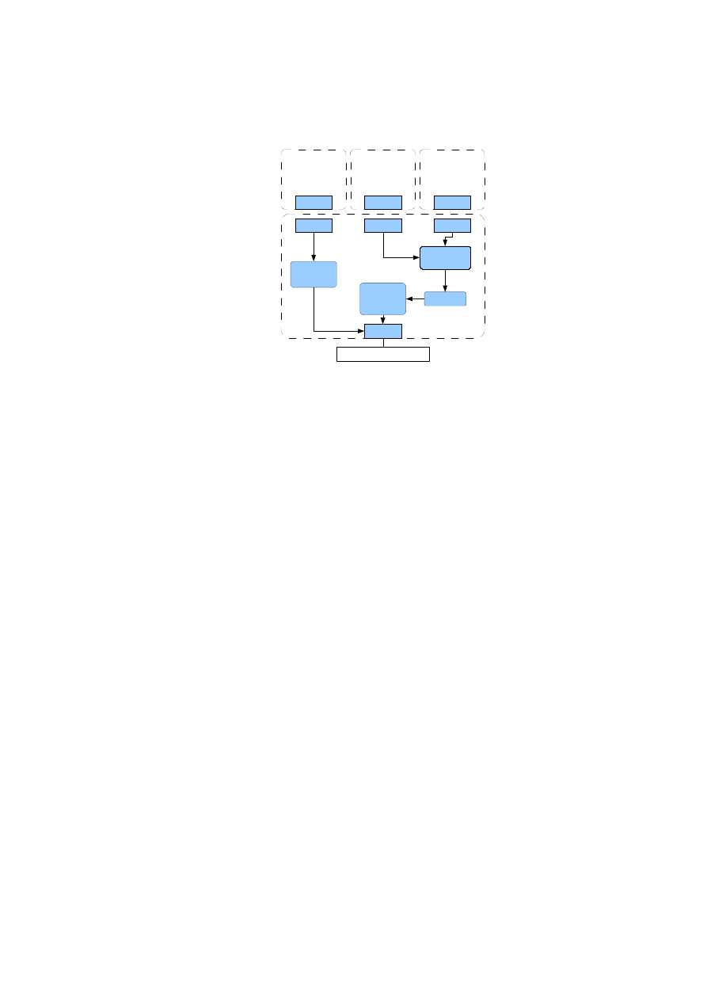
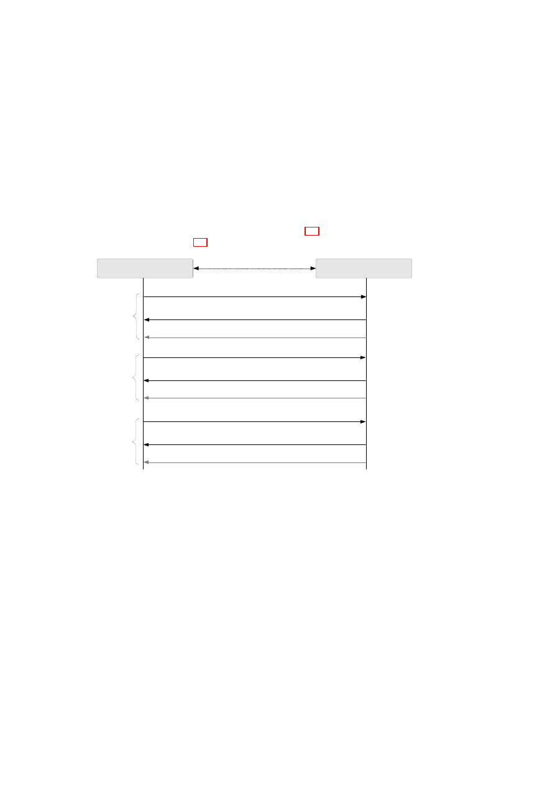
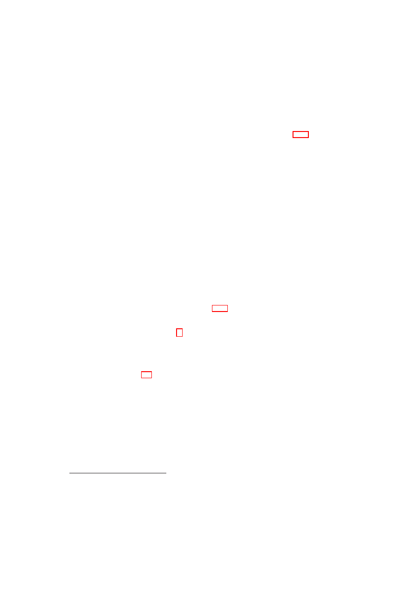

D05.2 Proof of Concept of the Security
Services
Project number
IST-027635
Project acronym
Open_TC
Project title
Open Trusted Computing
Deliverable type
Report (see p 84/85 Annex 1 - Nature)
Deliverable reference number
IST-027635/D05.2/Final
Deliverable title
Proof of Concept of the Security Services
WP contributing to the deliverable
WP05
Due date
Oct 2007 - M24
Actual submission date
November 23, 2007
Responsible Organisation
IBM
Authors
IBM (Matthias Schunter), KUL (Dries
Schellekens)
Abstract
This report describes the design of core
components of the OpenTC 2007
demonstrator for “Corporate Computing at
Home”. It is based on the research
documented in Deliverable D05.1 "Basic
Security Services” and is accompanied by
source code documented in Deliverable
D05.3.
Keywords
Security management, isolation policy, policy
enforcement, corporate computing at home,
2007 demonstrator
Dissemination level
Public
Revision
Final
Instrument
IP
Start date of the
project
1
st
November 2005
Thematic Priority
IST
Duration
42 months

A
BSTRACT
This report describes the design of core components of the OpenTC 2007 demonstra-
tor for “Corporate Computing at Home”. It is based on the research documented in
Deliverable D05.1 "Basic Security Services” and is accompanied by source code doc-
umented in Deliverable D05.3.
The goal of this deliverable is to describe and explain the actual design and im-
plementation of our demonstrator. A particular focus of this deliverable is how we
addressed the security challenges of the the given scenario “Corporate Computing at
Home”. Nevertheless, most chapters describe infrastructure that goes beyond the par-
ticular needs of this demonstrator.
A
CKNOWLEDGEMENTS
The following people were the main contributors to this report (alphabetically by or-
ganisation): Soeren Bleikertz, Serdar Cabuk, Philipp Grete (HP Labs, Bristol); Kon-
rad Eriksson, Augustin Fievet, Bernhard Jansen, HariGovind Ramasamy, Matthias
Schunter (IBM Research, Rüschlikon); Rainer Landfermann, Hans Löhr, Ahmad-
Reza Sadeghi, Michael Scheibel, Stefan Schulz, Patrick Stewin, Christian Stüble, Mar-
tin Unger, Marko Wolf (Ruhr University, Bochum).
We would like to thank our reviewer Dries Schellekens from Katholieke Univer-
siteit Leuven for substantial feedback after a thorough review. Furthermore, we would
like to thank the other members of the OpenTC project for helpful discussions and
valuable contributions to the research that is documented in this report.
2
Proof of Concept of the Security Services
OpenTC Workpackage 5
1
OpenTC Deliverable D05.2
V01 – Final Revision. 4948 (OpenTC Public (PU))
2007/11/23

2
OpenTC D05.2 – Proof of Concept of the Security Services
OpenTC Document D05.2/V01 – Final R4948/2007/11/23/OpenTC Public (PU)
Contents
1
Corporate Computing at Home Scenario Analysis
5
1.1
Basic Setting . . . . . . . . . . . . . . . . . . . . . . . . . . . . . .
5
1.2
Threats
. . . . . . . . . . . . . . . . . . . . . . . . . . . . . . . . .
6
2
Xen Security Services
8
2.1
Xen Security Services Overview and Implementation Status
. . . . .
8
2.1.1
Overview . . . . . . . . . . . . . . . . . . . . . . . . . . . .
8
2.1.2
TVD network infrastructure . . . . . . . . . . . . . . . . . .
9
2.1.3
Bridge . . . . . . . . . . . . . . . . . . . . . . . . . . . . . .
10
2.1.4
Virtual Private Network
. . . . . . . . . . . . . . . . . . . .
10
2.1.5
VM admission control . . . . . . . . . . . . . . . . . . . . .
10
2.1.6
Summary . . . . . . . . . . . . . . . . . . . . . . . . . . . .
13
2.2
Xen Virtual Networking Devices . . . . . . . . . . . . . . . . . . . .
14
2.2.1
Overview . . . . . . . . . . . . . . . . . . . . . . . . . . . .
14
2.2.2
Background . . . . . . . . . . . . . . . . . . . . . . . . . . .
15
2.2.3
Virtual Switch
. . . . . . . . . . . . . . . . . . . . . . . . .
16
2.2.4
Linux Dom0 Prototype . . . . . . . . . . . . . . . . . . . . .
17
2.3
Management of Trusted Virtual Networking Domains . . . . . . . . .
19
2.3.1
Auto-deployment of TVDs . . . . . . . . . . . . . . . . . . .
22
2.4
Xen Hierarchical Integrity Management . . . . . . . . . . . . . . . .
26
2.4.1
Our Solution . . . . . . . . . . . . . . . . . . . . . . . . . .
26
2.4.2
Use Cases for Dynamic Registers . . . . . . . . . . . . . . .
28
2.4.3
Conclusion . . . . . . . . . . . . . . . . . . . . . . . . . . .
29
2.5
Xen Cross-resource Policy Validation . . . . . . . . . . . . . . . . .
29
2.5.1
Introduction . . . . . . . . . . . . . . . . . . . . . . . . . . .
29
2.5.2
Formal Integrity Model for Virtual Machines . . . . . . . . .
30
2.5.3
The PEV Integrity Architecture . . . . . . . . . . . . . . . .
34
2.5.4
Realisation using Xen and Linux . . . . . . . . . . . . . . . .
37
2.5.5
Use Cases . . . . . . . . . . . . . . . . . . . . . . . . . . . .
39
2.5.6
Conclusion . . . . . . . . . . . . . . . . . . . . . . . . . . .
44
2.6
Xen Secure GUI Services . . . . . . . . . . . . . . . . . . . . . . . .
45
2.6.1
An Example Secure GUI Use Case
. . . . . . . . . . . . . .
45
2.6.2
Current State . . . . . . . . . . . . . . . . . . . . . . . . . .
45
2.6.3
Prototype Design . . . . . . . . . . . . . . . . . . . . . . . .
46
2.6.4
Conclusion . . . . . . . . . . . . . . . . . . . . . . . . . . .
49
3
4
OpenTC D05.2 – Proof of Concept of the Security Services
3
L4 Security Services
50
3.1
Introduction . . . . . . . . . . . . . . . . . . . . . . . . . . . . . . .
50
3.1.1
Basic Concepts . . . . . . . . . . . . . . . . . . . . . . . . .
50
3.1.2
Implementation . . . . . . . . . . . . . . . . . . . . . . . . .
53
3.1.3
Secure Virtual Private Network
. . . . . . . . . . . . . . . .
60
3.2
Security Considerations for the CC@H Scenario . . . . . . . . . . . .
63
3.2.1
Basic Security Concepts . . . . . . . . . . . . . . . . . . . .
63
3.2.2
Facing Threats . . . . . . . . . . . . . . . . . . . . . . . . .
64
Bibliography
67
OpenTC Document D05.2/V01 – Final R4948/2007/11/23/OpenTC Public (PU)
Chapter 1
Corporate Computing at Home
Scenario Analysis
M. Unger (RUB)
This chapter presents the security requirements of the Corporate Computing at
Home (CC@H) scenario from a security infrastructure perspective. The corresponding
prototype will be presented at the 2007 project review meeting.
1.1
Basic Setting
The background of corporate computing at home is that employees often have more
powerful computers at home as compared to the office. Furthermore, computing is
ubiquitous and employees get increasingly mobile. As a consequence, it would be
desirable to perform potentially confidential corporate tasks on arbitrary computers.
The envisioned main usage is to expand the corporate network to a home computer
such that the home computer is guaranteed to enforce corporate policies.
Within the CC@H demonstrator an employee has to be able to work at home using
his own computer and to access, e.g., the company’s intranet (see Figure 1.1). For
that purpose a special, trusted corporate compartment runs on top of a virtualisation
layer on the employee’s computer. This compartment has to be secure against certain
attacks (see 1.2) and fully independent of OSes or applications running in parallel on
the virtualisation layer. The virtualisation layer either consists of the Xen hypervisor
and its security services or the L4 microkernel and security services.
The corporate compartment has to be able to set up a secure connection between
itself and a server of the company, e.g., a VPN gateway. While setting up this secure
connection, attestation is done to ensure that the client’s corporate compartment run-
ning on the employee’s computer is in a proper state and can be given allowance to
connect to the company’s intranet.
On the server-side no special virtualisation techniques are used in this prototype
scenario. But of course mechanisms to verify the client’s state and to mediate access
according to the results of this verification have to be in place.
In the following section we enlist the possible threats that have to be countered by
the security services. How this is done is described within the security considerations
sections of the Xen (see chapter 2) or L4 security services (cf. chapter 3), respectively.
5
6
OpenTC D05.2 – Proof of Concept of the Security Services
Hypervisor
Internet + Game overlay network
Corporate network
P
e
rs
o
n
a
l
M
a
c
h
in
e
s
P
e
rs
o
n
a
l
M
a
c
h
in
e
s
P
e
rs
o
n
a
l
M
a
c
h
in
e
s
C
o
rp
o
ra
te
M
a
c
h
in
e
s
Resource Isolating
Corporate
Trusted Virtual Domain
Internet
Figure 1.1: Basic Setting: Corporate and game computers hosted on a single home
computer.
1.2
Threats
The following threats have to be addressed by the security services or by the architec-
ture as a whole.
1
Threats to the Corporation
There are threats that have to be addressed with regard to corporate data:
•
The PC of the employee gets lost, and the finder/thief is able to read confidential
corporate data stored on the computer.
•
An attacker gains illegitimate access to the network of the corporation using its
own or an employee’s computer. This includes replacing the trusted computing
base (e.g., hypervisor) with a bogus version to obtain secret information.
•
An employee deletes corporate data accidentally or on purpose*.
Threats to the Employee
Threats that have to be considered from the perspective of the employee:
•
The employee’s system is altered by the installation of the corporate compart-
ment resulting in a situation that the computer is no longer usable for private
purposes because of, e.g., restrictive security guidelines.
•
Access to private data stored on the employee’s system may be possible for other
company members, e.g., the administrator.
1
Threats marked with * are not related to the security services. These have to be considered generally
and thus are not included within the security considerations of the security services.
OpenTC Document D05.2/V01 – Final R4948/2007/11/23/OpenTC Public (PU)

CHAPTER 1. CORPORATE COMPUTING AT HOME SCENARIO ANALYSIS
7
Threats to both
Threats and attacks that have to be considered for company and employee are listed
below:
•
Direct Memory Access by devices
•
Illegitimately modified compartments
•
Malware installed/executed within compartments or in the core hypervisor
•
Software vulnerabilities in the hypervisor or security services
•
Illegitimate program execution or data usage
•
Denial of Service attack*
•
User connects to a fake corporate server (phishing)
•
Loss of user credentials*
OpenTC Document D05.2/V01 – Final R4948/2007/11/23/OpenTC Public (PU)
Chapter 2
Xen Security Services
S. Bleikertz, S. Cabuk, P. Grete (HPL), K. Eriksson, B. Jansen, H. Ramasamy, M.
Schunter (IBM)
This chapter describes different aspects of the Xen Security Services. Section 2.1
gives an overview and identifies the current status of the implementation. Section 2.2
provides an in-depth description of the design of the individual virtual networking com-
ponents. Section 2.3 describes the network management concepts in detail. Section 2.4
describes how to expand the core trusted computing base provided by the hypervisor
to cover the executables of the security services as well. Section 2.5 shows how –
given correct executables – integrity of the used policies can be proven. Furthermore,
it describes how to bind secrets to correct enforcement of policies and other conditions.
Section 2.6 describes the design of the secure GUI.
2.1
Xen Security Services Overview and Implementa-
tion Status
K. Eriksson, H. Ramasamy, M. Schunter (IBM)
2.1.1
Overview
The security services manage the security configuration of the hypervisor and provide
secure virtualization of resources to the virtual machines.
The current implementation of the Security Services is an extension of the 2006
security services. The concept of TVDs (Trusted Virtual Domains) has been added to
the networking component. The core idea of TVDs is to define virtual trust zones that
can span multiple machines. Each trust zone then determines the security policies for
the physical and virtual machines joining this zone. It also determines the transport
protection used in a given zone.
The updated networking component includes a first version of admission control
for VMs. This ensures that only VMs that satisfy the TVD policies can join.
To be able to provide these services a management entity called “TVD proxy” was
implemented to manage and enforce the virtual domain policies on each physical host
8
CHAPTER 2. XEN SECURITY SERVICES
9
that a TVD is residing on. This means that on a physical host one TVD proxy is running
for each TVD that can deploy VMs on that specific host.
Each TVD proxy gets its portion of the needed TVD policies from the TVD Master
that manage all policies for a specific TVD. Policies sent to a TVD proxy include al-
lowed VMs, their reference measurements, extra configuration, TVD network settings,
and configuration for secure channels if TVD spans several physical hosts.
2.1.2
TVD network infrastructure
The TVD networking functionality enables a network infrastructure than can inter-
connect multiple virtual machines running on multiple physical hosts.
The implemented network infrastructure enables a private virtual network for each
TVD and ensures network separation by inter-connecting VMs at the Ethernet level.
This means that logically, we provide a separate virtual wiring for each TVD. As a
consequence, different TVDs do not share any virtual cables to prevent that packets
from different TVDs are traversing any shared routing tables and TCP/IP stacks. It also
gives the freedom to deploy a wide range of networking solutions on top of the TVD
network infrastructure. Network address allocations, transport protocols and other ser-
vices are then fully customizable by the TVD owner and work transparently as if the
VMs were in an isolated physical network.
To maintain secrecy and confidentiality of network data when a TVD network spans
several physical hosts the data is transferred over encrypted VPN tunnels. This enables
the use of untrusted networks between physical hosts that contains VMs within the
same TVD to provide a seamless view of the TVD network.
TVD1
VM1
VM2
VM3
TVD2
VM1
VM2
VM3
TVD1
VM4
VM5
TVD2
VM4
Host 1
Host 2
LAN/WAN
Bridge
VPN
Bridge
VPN
Bridge
VPN
Bridge
VPN
Figure 2.1: TVD Network Overview
OpenTC Document D05.2/V01 – Final R4948/2007/11/23/OpenTC Public (PU)

10
OpenTC D05.2 – Proof of Concept of the Security Services
2.1.3
Bridge
For bridging VMs within a physical host there are two options, either using the Linux
Kernel Ethernet Bridge functionality or the OpenTC vSwitch from HP Labs.
Both work in a similar way when it comes to plugging in VMs, and it is done
by attaching a VM’s back-end virtual network interface (vif) to the bridge/vSwitch
at Ethernet level and therefore all ingoing and outgoing packets from a VM will be
directly going to/from the attached bridge only and bypassing all higher level packet
routing/mangling/filtering outside the TVD network infrastructure.
Each bridge works in the same way as a physical Ethernet switch does by main-
taining MAC tables (with age counters) for each port (in this case connected vifs) to
keep track of where to route packets.
The Linux bridge can also handle the link management protocol STP (Spanning
Tree Protocol, IEEE 802.1D) to handle multiple hops and avoid cyclic routes if a more
complex TVD network layout is deployed. This is useful when several local TVD
networks on different physical hosts are inter-connected via multiple secure channels.
The vSwitch has capability to do VLAN tagging (IEEE 802.1Q) which is useful
when inter-connecting physical hosts with several TVDs over a trusted network such a
internal Data Center network. It works by adding tag information in the Ethernet frame
header that identifies to which VLAN a frame belongs and then send out the frame on
a shared network. Receiver and intermediate VLAN-enabled switches can then apply
rules and routing depending on which VLAN a frame belongs to. This enables better
network separation but not confidentiality.
2.1.4
Virtual Private Network
To add confidentiality to data between VMs, that belong to the same TVD but are
located on different physical hosts, the data is transferred over a secure channel between
the local bridges on each physical host.
The relaying is done on Ethernet level to keep the TVD network transparent no
matter if the VMs are residing on the same or on different physical hosts. The imple-
mented solution of secure channels uses point-to-point VPN tunnels with OpenVPN
that are configured via the TVD proxy from the TVD policies. This enables reconfigu-
ration of topology and the involved VPNs within a TVD from a single administration
point, the TVD Master.
The TVD policies distributed from the TVD Master to the TVD proxy also include
the secret key for the VPN along with other VPN specific settings. On a physical
host the VPN’s endpoint is represented as a local virtual network interface (vif) that is
plugged into the appropriate bridge controlled by the TVD proxy. The bridge’s MAC
tables are then updated in the same fashion as physical switches learn what port they
need to send on for a specific host.
2.1.5
VM admission control
When a VM is about to join a TVD its state will be verified by the local TVD proxy to
see if it complies to the policies of that TVD. If it is accepted then it will be connected
to the TVD network.
OpenTC Document D05.2/V01 – Final R4948/2007/11/23/OpenTC Public (PU)

CHAPTER 2. XEN SECURITY SERVICES
11
vSwitch/
Bridge
eth0
vif1.0
eth0
vif2.0
Dom0
DomT1
(paravirt)
DomU
DomT2
(fully virt.)
eth0
tap0
Def.
Bridge
peth0
VPN
eth
eth
eth
udp/ip
eth
Dom0
NW
stack
Untrusted network
Figure 2.2: TVD Network Modules within Physical Host
In the implementation this is done by having the Compartment Manager (Comp-
Mgr) do a two step interaction with the TVD proxy during startup of a VM, namely
compartment attest and compartment network attach . This is done over a socket con-
nection using the Compartment Admission Protocol (CAP) specifically designed for
this purpose.
The CompMgr makes use of a module called Integrity Service Manager to measure
the state of the VM to start. The measurements can include state of VM configuration,
kernel and disk(s) that are going to be attached to the VM.
Compartment attestation:
1. CompMgr loads the VM configuration and applies security directives such as
measuring compartment image (with help of Integrity Service Manager), unseal-
ing key and setting up encrypted storage (with help of SVDM ) and checks if
VM should be part of a TVD.
2. If security directives state that the VM should be part of TVD network then the
CompMgr sends prior to VM startup an attestation request to the TVD proxy
containing the measurements of the VM.
3. The TVD proxy looks up the settings for the VM in the policies and validates
the measurements and returns accept or deny depending on the validation result
along with optional extra settings (such a MAC address) that TVD proxy wants
CompMgr to apply on VM at startup.
Compartment network attach:
4. Once the CompMgr has started the VM it sends an attach request to the TVD
proxy containing the virtual network interface (vif) of the newly started VM that
should be part of the TVD network, and also the measurements of the VM.
OpenTC Document D05.2/V01 – Final R4948/2007/11/23/OpenTC Public (PU)

12
OpenTC D05.2 – Proof of Concept of the Security Services
5. The TVD proxy once again verifies the VM measurements and if everything is
according to TVD policies then connects the vif to the bridge of the local part of
the TVD network and returns that attachment was successful.
The CompMgr will not start the VM if the TVD proxy returns deny during the
attestation procedure.
If the attestation step would be skipt and the CompMgr requests the TVD proxy
to attach a started VM with “bad” measurements to the TVD network then the TVD
proxy will respond saying that it failed and leave the vif unconnected, thus leaving the
TVD network unreachable by the VM by not attaching it the bridge.
The admission control protocol is depicted in Figure 2.3. The implementation de-
tails are depicted in Figure 2.4.
Compartment Manager
TVD Proxy
(Listens on TCP port 6150)
Query: Attest Compartment (Comp. ID, Comp. Meas.)
Response: Attest Granted (Comp. ID, MAC addr.)
Response: Attest Denied (Comp. ID)
or
TCP Socket
Query: Attach Compartment (Comp. ID, Comp. Meas., vif)
Response: Attach Ok (Comp. ID)
Response: Attach Fail (Comp. ID)
or
Step 1
Attestation
Step 2
Attaching
Query: Detach Compartment (Comp. ID)
Response: Detach Ok (Comp. ID)
Response: Detach Fail (Comp. ID)
or
Step 3
Detaching
Figure 2.3: Compartment Admission Protocol towards TVD
The extended implementation added a couple of modules to the original Security
Services architecture. Most notable is the TVD proxy that handles the enforcing of
TVD policies on a physical host. The enforcing covers accept/deny of starting a VM
depending on measurements and also admission to TVD network.
The TVD proxy further contains sub-modules that handles various networking
tasks needed to be able to provide the TVD networking infrastructure to attached VMs.
It includes modules for controlling Kernel bridge, vSwitch and VPN.
Compartment Manager
This module
•
Manages starting and stopping of VMs.
•
Verifies VM image and configuration towards TPM.
•
Sets up needed resources for a VM, such as memory, encrypted storage and so
on.
OpenTC Document D05.2/V01 – Final R4948/2007/11/23/OpenTC Public (PU)

CHAPTER 2. XEN SECURITY SERVICES
13
Compartment Manager
(starting/stopping VM)
TVD Proxy
(Enforcing TVD policies, controlling
vNet)
TVD Master
(Web-server containing
policy XML-file)
vSwitch ctrl.
(userland lib interfacing
kernel module)
VPN ctrl.
OpenVPN
(TCP interface to daemon)
GUI user auth.
Bridge ctrl.
(interfacing kernel
module via user-land lib)
SVDM
Secure Virtual Device Manager
(Resource allocation & setup)
Integrity Service Manager
(Measuring cfg., kernel, disks)
New implementation
Extended implementation
Not implemented
Linked function call
Protocol over socket
Figure 2.4: Implementation module details
•
Interacts with Xen (via command-line interaction) for loading a VM, starting it
and stopping it.
•
Asks TVD-proxy for VM attestation and network access via the CAP protocol.
TVD proxy
The TVD proxy runs as a separate process controlling the network re-
sources on a physical host.
It loads and parses the polices at startup and then waits for requests from the Cmp-
Mgr. The policies are specified in XML and can be read from file or remotely over any
protocol that the Linux Curl library can handle (http, https, ftp and so on).
The TVD proxy sets up the Kernel bridge or vSwitch at startup and then later starts
the VPN when the first VM is attached.
Controlling of the VPN is done via command-line interaction and using the Open-
VPN management interface which runs over a TCP socket.
2.1.6
Summary
The current implementation of the Security Services can handle at least the following:
•
Integrity enforcement of compartment configuration, kernel and system image.
The parts to be included in measurement are configurable (config, kernel, sys.
Image ). Measurements can extend a PCR in the TPM for later use in unsealing
of keys.
•
System image and additional disks to attach can be encrypted and key(s) sealed
to TPM’s base PCRs and optional an extra PCR to include earlier selected mea-
surements.
•
Compartment Manager handles running VMs paravirtualised and fully virtu-
alised. VMs stated to be part of a TVD will be attested and attached against
the TVD proxy.
OpenTC Document D05.2/V01 – Final R4948/2007/11/23/OpenTC Public (PU)

14
OpenTC D05.2 – Proof of Concept of the Security Services
•
The TVD proxy reads policies in XML format from file or remote via HTTP,
which should be over an prior setup secure tunnel (like a TLS tunnel using a
remote attestation protocol).
•
The TVD proxy handles using both the Kernel Bridge and the vSwitch (se-
lectable) is the local bridge for the TVD network.
•
OpenVPN is used as VPN tunnel and is setup on demand and controlled by the
TVD-proxy.
2.2
Xen Virtual Networking Devices
S. Bleikertz, S. Cabuk (editor) (HPL)
This section provides details on the virtual networking prototype developed by
HPL. The prototype was fully incorporated into the demonstrator to help isolate the
corporate networking from a non-corporate one (with the difference that in the demo
OpenVPN is used instead of IPSec).
2.2.1
Overview
Virtualisation technology can be applied to several different resources in an IT envi-
ronment and is nowadays popularly used for server consolidation. Another area of
virtualisation in IT environments and datacenters is network virtualisation, which is
used to create virtual networks on top of the physical infrastructure independently of
the physical topology. Several virtual networks, each with a different topology, can be
deployed simultaneously on the same physical network, which allows consolidation of
networks and a flexible topology configuration.
A typical use case for virtual networking in datacenter environments is when sev-
eral customers share the physical resources such as servers and network infrastructure,
but each customer wants to configure and operate a network for her own servers. With-
out virtualisation technology each customer would need a dedicated physical network
infrastructure and servers to do so, which is cost-intensive and inflexible. Virtualisation
of servers and network allows the sharing of physical resources with strong isolation,
which increases the overall datacenter utilisation and reduces the costs for the cus-
tomers.
Virtualisation allows customers to specify a flexible configuration of their network
topology and server arrangement. This is because, thanks to virtualisation, no physical
reconfiguration such as changing cabling or adding new servers to a rack is needed.
This is beneficial for customers in order to rapidly react to growing demands of their
IT infrastructure.
Customers have a high demand for strong isolation to protect their confidential busi-
ness information from other parties sharing the same physical resources. Virtualisation
does not provide the same isolation as dedicated physical resources do, but allows the
introduction of further security mechanisms due to the gained flexibility of virtualisa-
tion. This section discusses how network virtualisation can be utilised to implement a
security mechanism for fine-grained isolation and policy enforcement.
OpenTC Document D05.2/V01 – Final R4948/2007/11/23/OpenTC Public (PU)
CHAPTER 2. XEN SECURITY SERVICES
15
2.2.2
Background
Switch Functionality
A switch, compared to a hub, only sends incoming packets to the port, where the
destination host is connected, and not to all ports. In order to make this decision, the
switch has to know which host is connected to which port and manages this mapping
in a table. A physical Ethernet switch manages a MAC table, which maps a Layer 2
address (MAC) to a physical port.
Switch table management consists of two procedures for adding a new table entry
and removing an old one, which are called Learning and Ageing. In the Learning pro-
cedure every incoming packet is analysed and the source MAC address is extracted.
The switch knows on which port the packet was received and adds a new or updates
an existing table entry for the source MAC address with this port number. The Ageing
procedure removes obsolete entries from the table by using a time stamp for each en-
try, which indicates when the entry was lastly updated. If a certain time difference is
reached, the entry will be removed from the table. In order to have an efficient packet
transportation within the switch, these two procedures keep the table consistent and
accurate. A special case is when the destination MAC address of an incoming packet
is not in the table yet. In this case, the switch can not decide to which port the packet
have to be forwarded, so it will broadcast it to all ports, in order to try to reach the
destination host. If the host is connected to the switch it might send a response, which
the switch can use to add the table entry for this host.
Link Modes
As depicted in Figure 2.5, vSwitches are linked to each other using several different
protocols depending on the type of link between them. This section gives an overview
of these protocols, describing their functionalities, and best usage scenarios.
EtherIP
is a protocol for tunnelling Ethernet and 802.3 packets via IP, which allows
the expansion of a LAN over a Wide or Metropolitan Area Networks. Each tunnel end-
point uses a special network device provided by the operating system, which encapsu-
lates the whole outgoing Ethernet/802.3 packet in a new IP packet and then transmits
it to the other side of the tunnel. From incoming packets the embedded Ethernet/802.3
packet is extracted and transmitted to the LAN.
EtherIP does not provide confidentiality or integrity, which makes it only suitable
for routed and trusted networks in a corporate or datacenter environment, for example
when two vSwitches are located in a datacenter, but are hosted on different servers,
which are not connected on the same VLAN switch.
VLAN tagging
is a well-established standard for network isolation on physical net-
work equipment in datacenters. The standard is described in IEEE 802.1Q and uses
tagging of Ethernet packets for isolation between networks. As an example, a host in
the VLAN 42 uses a special network device provided by the operating system to apply
OpenTC Document D05.2/V01 – Final R4948/2007/11/23/OpenTC Public (PU)
16
OpenTC D05.2 – Proof of Concept of the Security Services
Figure 2.5: General vSwitch Architecture
a VLAN tag, which contains the VLAN ID 42, to outgoing packets and to remove the
tag from incoming packets before they are processed by the upper network stack.
In order to handle VLAN tagged packets, the physical network equipment has to
support IEEE 802.1Q and be configured appropriately. The port of the VLAN switch,
which is used by the host of VLAN 42, has to be assigned to VLAN 42 as well as
the port of the destination host. The VLAN Switch will analyse the VLAN Tag, in
particular the VLAN ID, of incoming packets and only send them to ports, which are
assigned to this particular VLAN ID.
IPSec
addresses the issues of packet confidentiality and integrity, which are miss-
ing both in EtherIP and VLAN tagging. This section gives only a brief explanation
of IPSec. For further details refer to RFC 4301 to 4309, which covers the technical
specifications.
We focus on the Encapsulating Security Payload (ESP) of IPSec, which encapsu-
lates a IP packet and applies an encryption mechanism to provide confidentiality and
integrity of this packet. The usage scenario for IPSec is when two vSwitches are linked
to each other over an untrusted network such as the Internet. Outgoing Ethernet/802.3
packets are first encapsulated using EtherIP, and then encapsulated and encrypted us-
ing IPSec. The double encapsulation is needed, because IPSec only encapsulates IP
packets and not Ethernet/802.3 ones.
2.2.3
Virtual Switch
Overview
The Virtual Switch (vSwitch) is the core component of virtual networking and oper-
ates similar to a physical switch. It is responsible for network virtualisation, isolation,
and spanning a virtual network across physical hosts. The vSwitch provides the primi-
OpenTC Document D05.2/V01 – Final R4948/2007/11/23/OpenTC Public (PU)
CHAPTER 2. XEN SECURITY SERVICES
17
tives for implementing higher-level security policies for networking and it needs to be
configured by a higher-level management layer (e.g., security services management) .
Architecture
Figure 2.5 illustrates the general architecture of virtual networking and how several
vSwitches are linked together in a sample environment. In this scenario we have three
physical hosts, which are connected to each other using different networks and hosting
VMs of different customers or TVDs. The green TVD consists of VM 2 and VM 3
hosted on A and B, which are connected to each other using a local VLAN switch. The
isolation of the green TVD to other parties connected to this switch is realised using
the built-in VLAN tagging with the TVD ID as VLAN ID. VM 1 and VM 4 of the blue
TVD, also located on the physical hosts A and B, are using EtherIP encapsulation over
an IP-based Metropolitan Area Network (MAN), like a routed corporate network. The
members of the red TVD VM 5 and VM 6 are on physical hosts, which are connected
only through a Wide Area Network (WAN), like the Internet, and an IPSec channel is
needed, in order to ensure confidentiality and integrity.
The goal is that every VM thinks it is on the same LAN with the other VMs of its
TVD and all traffic is transmitted in an efficient and secure manner depending on the
link type and the chosen protocol. Security issues, such as communicating securely
over a WAN link, are addressed by the network infrastructure and the VMs can rely on
this mechanism and do not have to address these issues themselves.
2.2.4
Linux Dom0 Prototype
The first version of the vSwitch prototype is realised as a Linux kernel module for the
vSwitch core component and a stack of user land configuration tools. This vSwitch
is intended to operate from a Linux-based dom0, which acts as a net-backend for the
VMs and has access to the physical network interface. The current implementation is
limited to VLAN Tagging and EtherIP encapsulation as vSwitch linking modes. An
additional VPN module is employed to provide IPSec encapsulation functionality.
Implementation in Xen
Figure 2.6 depicts the Linux-based implementation of the vSwitch on a Xen platform.
The Xen dom0 acts as a net-backend for the VMs on the same host and has virtual
network interfaces called vif, where each vif has a corresponding net-frontend device
in the VM. A VM can be associated with a vSwitch using the appropriate vif device
and all traffic for a VM is processed by the vSwitch, in particular outgoing traffic is
tagged or encapsulated.
There exists two versions of the vSwitch implementation, which differs in the im-
plementation of VLAN tagging. The first version uses the pseudo device for VLAN
tagging provided by the Linux kernel. The second one has its own functionality for
VLAN and EtherIP processing, making the architecture for packet processing more
consistent. The latter also prevents the extra overhead for transmitting packets through
another networking layer.
From an implementation point of view this vSwitch version is highly coupled to
dom0 and Linux. Communication with the connected VMs is realised through the
Linux dom0 bridging and its hooks for packet interception. Furthermore, the vSwitch
registers several handlers for VLAN and EtherIP handling within the Linux kernel’s
OpenTC Document D05.2/V01 – Final R4948/2007/11/23/OpenTC Public (PU)
18
OpenTC D05.2 – Proof of Concept of the Security Services
Host A
Dom 1
Dom 0
α
encap.
module
VLAN
tagging
module
Policy
Engine
vSwitches
eth0
eth0
vif2.0
vif1.0
eth0
eth0.
α
front-end devices
back-end
devices
physical
NIC
VLAN-capable
physical switch
Host B
Dom 1
Dom 0
α
encap.
module
VLAN
tagging
module
Policy
Engine
vSwitches
eth0
eth0
vif2.0
vif1.0
eth0
front-end devices
back-end
devices
physical
NIC
Host C
eth0
physical NIC
(VLAN un-aware)
C
A1
C
B1
C
A1
C
B1
A1
C
B1
C
A1
C
B1
C
Dom 2
Dom 2
β
β
eth0.
α
Figure 2.6: Prototype Implementation of the vSwitch.
networking subsystem. The vSwitch consists of the general switch functionality, im-
plementing the learning and ageing procedure for a table mapping MAC addresses to
virtual ports.
Configuration
The configuration of the vSwitch is also done within dom0. The vSwitch kernel module
provides two interfaces, one for issuing configuration commands and another one for
configuration examination. For configuration commands the vSwitch provides a device
called
/dev/hplvnet0
, which can be used to issue the following ioctl commands:
VNET_IOC_ADD_NET Create a new virtual network
VNET_IOC_DEL_NET Delete a virtual network
VNET_IOC_ADD_PORT_IF Assign a VM’s NIC to a VNet
VNET_IOC_DEL_PORT_IF Remove a VM’s NIC of a VNet
These commands allow a basic vSwitch management.
The configuration can be examined through two sysfs directories located in
/sys/class/vswitch/
and
/sys/class/vport/
.
The vSwitch class
is ordered by VNet IDs, like
/sys/class/vswitch/0x00000017/
where
0x00000017 is the VNet ID 23 in hex, and each entry holds specific VNet information
and links to the associated VM’s NICs such as
/sys/class/vport/vif10.0/
.
These two interfaces are normally not used directly by the user, but through a bunch
of user land configuration tools. These tools provide an easy to use configuration in-
terface, abstract the issuing of ioctl commands and interpret the hierarchy of the sysfs
entries.
OpenTC Document D05.2/V01 – Final R4948/2007/11/23/OpenTC Public (PU)
CHAPTER 2. XEN SECURITY SERVICES
19
vnet_add id saddr daddr Create a new VNet with the given ID, source and destina-
tion IP address
vnet_control Interactive configuration shell
vnet_list List all configured VNets
vnet_remove id Remove VNet with given ID
vnet_show id Show information of a VNet with the given ID
vport_add id devname Add the VM’s NIC given by devname to a VNet with the
given ID
vport_remove devname Remove a VM’s NIC
vport_show devname Show information of a VM’s NIC
Problems
The main problem with this solution is that it operates within the privileged domain,
which should be kept minimal and only for VM management purposes. For stronger
isolation between the VMs, a disaggregation of dom0 is desired by splitting up the
functionality of dom0 into several VMs. The future versions of the vSwitch prototype
will focus on building a vSwitch as a lightweight VM only for networking purposes.
2.3
Management of Trusted Virtual Networking Do-
mains
S. Cabuk (HPL), K. Eriksson, H. Ramasamy, M. Schunter (IBM)
We now describe the infrastructure for managing our virtual networks. The core con-
cept is the notion of a Trusted Virtual Domain (TVD). The entities managing each TVD
are called TVD Master and TVD proxy.
The TVD master plays a central role in the management and auto-deployment of
TVDs. There is one TVD master per TVD. We refer to the TVD master as a single
logical entity, although its implementation may be a distributed one. The TVD master
is trusted by the rest of the TVD infrastructure and the VPEs that are members of the
TVD. Known techniques based on Trusted Computing [36] can be used to determine
the trustworthiness of the TVD master by verifying its software configuration. The
TVD master can be hosted on a physical machine or a virtual machine. In the case of a
VM implementation, the PEV (protection, enforcement, verification) architecture pro-
posed by Jansen et. al. [14] can be used to obtain policy enforcement and compliance
proofs for the purpose of assessing the TVD master’s trustworthiness.
The TVD policy is defined at the TVD master by the system administrator (e.g.,
the administrator of a data center hosting multiple TVDs, each belonging to a different
customer). The TVD master has the following main responsibilities:
1. distributing the TVD policy and other TVD credentials (such as VPN key) to the
TVD proxies and informing them of any updates,
OpenTC Document D05.2/V01 – Final R4948/2007/11/23/OpenTC Public (PU)
20
OpenTC D05.2 – Proof of Concept of the Security Services
2. determining the suitability of a platform to host a TVD proxy (described below),
and thereafter, periodically assessing the platform’s continued suitability to host
VPEs belonging to the TVD,
3. maintaining an up-to-date view of the TVD membership, which includes a list
of TVD proxies and the VPEs hosted on their respective platforms.
TVD proxy
On every host that may potentially host a VM belonging to the TVD,
there is a local delegate of the TVD master, called the TVD proxy. Like the TVD
master, the TVD proxy is also trusted. The TVD proxy is the local enforcer of the
TVD policies on a given physical platform. At the time of its creation, the TVD proxy
receives the TVD policy from the TVD master. Upon an update to the TVD policy (by
a system administrator), renewal of TVD credentials, or refresh of TVD VPN keys at
the TVD master, the master conveys the update to the TVD proxies.
The TVD proxies on a given platform are independent. Although TVD proxies
are trusted, TVD proxies on the same platform should be sufficiently isolated from
each other. For example, a TVD proxy should not be able to access private TVD
information (such as policies, certificates, and VPN keys) belonging to another TVD
proxy. For improved isolation, each TVD proxy on the platform may be hosted in
a separate infrastructure VM, which is different from a VM hosting regular services,
called production VM. On a platform with the Trusted Platform Module or TPM [37],
isolation can further be improved by TPM virtualisation [3], assigning a separate virtual
TPM to each infrastructure VM, and using the virtual TPM as the basis for storing
private TVD information.
A TVD proxy must only be able to interact with VMs hosted on the platform be-
longing to the same TVD. As we describe below, that requirement is enforced by the
Local Common TVD Coordinator (LCTC).
The main responsibilities of the TVD proxy are:
Configuration of the Local TVD vSwitch The TVD proxy configures the local TVD
vSwitch based on the TVD policy. For example, if the TVD policy specifies that
information confidentiality is an objective, then the TVD proxy enables all traffic
through the vSwitch to pass through the VPN module and provides the VPN key
to the module.
Maintenance of Private TVD Information The TVD proxy maintains private TVD
information such as policies, certificates, and VPN keys.
Status Reports to the TVD Master Upon request or periodically, the TVD proxy
provides a platform status report to the TVD master. The report includes in-
formation such as the number of VMs belonging to the TVD and their unique
addressable identifiers and the current vSwitch configuration. The status report
also serves as an “I am alive” message to the TVD master, and helps the TVD
master to keep an updated list of TVD proxies that are connected to it.
Enforcement of Admission Requirements for VMs into the TVD A VM’s virtual
NIC is attached to a vSwitch only after the TVD proxy checks that the VM
satisfies TVD membership requirements.
OpenTC Document D05.2/V01 – Final R4948/2007/11/23/OpenTC Public (PU)
CHAPTER 2. XEN SECURITY SERVICES
21
Enforcement of Co-Location Restrictions The Local Common TVD Coordinator
(LCTC) checks with each TVD proxy already existing on the platform for co-
location compatibility before instantiating a new TVD proxy.
Enforcement of Multi-TVD Membership Restrictions A VM may belong to multi-
ple TVDs simultaneously. However, approval from TVD proxies corresponding
to the TVDs in which the VM holds membership is needed before the VM can
join a new TVD.
Continuous Enforcement of TVD Policy The TVD proxy is responsible for contin-
uous enforcement of the TVD policy despite updates to the policy and changing
configuration of the platform and member VMs. Upon receiving an update to
the TVD policy from the TVD master, the TVD proxy may re-configure the
vSwitch, and re-assess member VMs’ status to reflect the updated policy. Even
without any policy update, the TVD proxy may be required by the TVD policy
to periodically do such re-configuration and re-assessment.
Local Common TVD Coordinator (LCTC)
The Local Common TVD Coordinator
or LCTC is present on every platform (hence, the word local in the name) on which a
TVD element has to be hosted. The LCTC itself does not belong to any single TVD
(hence, the word common in the name). The LCTC is part of the minimal TCB
1
on
every TVD-enabled platform.
The LCTC is the entity that a TVD master or a system administrator contacts to
create a new TVD proxy on the platform. For this purpose, the LCTC must be made
publicly addressable and knowledgeable about the identities of the entities that may
potentially request the creation.
The LCTC has three main responsibilities, namely (1) creation of new TVD proxies
on the local platform, (2) determining whether a new TVD proxy can be co-hosted
along with TVD proxies already existing on the platform, and (3) restricting access of
TVD proxies only to VMs belonging to their respective TVDs. The LCTC maintains a
list of VMs currently hosted on the platform, a list of TVD proxies currently hosted on
the platform, and a mapping between the VMs and the TVDs they belong to.
The actual creation of the TVD proxy is preceded by a prepare phase, which in-
volves
1. Mutual authentication and authorisation between the LCTC and the entity (e.g.,
the TVD master or system administrator) requesting the creation of the TVD
proxy,
2. Determining the suitability of the platform for hosting the new TVD proxy, from
the point of view of both the requesting TVD master and the TVDs already
hosted on the platform.
The second step above involves determining whether a new TVD proxy can be
co-hosted along with TVD proxies already existing on the platform. The LCTC is a
thin implementation; it simply asks each TVD proxy whether a new TVD proxy can
be co-hosted on the platform. Based on their internal security policies, the individual
TVD proxies simply return a “yes” or “no” answer. The LCTC replies positively to the
1
On a Xen-based platform, the minimal TCB consists of the LCTC, Xen Dom0, the Xen hypervisor, and
the underlying hardware.
OpenTC Document D05.2/V01 – Final R4948/2007/11/23/OpenTC Public (PU)
22
OpenTC D05.2 – Proof of Concept of the Security Services
TVD Master
DomU
Dom0
TVD proxy
TVD-specific
Modules
EtherIP VLAN
…..
Policy
Engine
TVD-specific
Modules
EtherIP VLAN
…..
Policy
Engine
vNICs
…
0
TVD object
←
create TVD (TVD requirements, policy model)
create TVD Proxy (Master URL)
1
0
2
connect VM to TVD (TVD object)
1
1
2
Figure 2.7: Steps in Populating a TVD
requesting TVD master only if all TVD proxies said “yes”; otherwise, it returns a neg-
ative reply to the requesting TVD master. The LCTC includes a list of existing TVD
proxies with a positive response. Additionally, if required, the LCTC may include the
attestation of the platform characteristics along with a positive response. The prepare
phase concludes with the response from the LCTC. Based on the response, the request-
ing TVD master can determine whether its own policies allow co-hosting with the list
of existing TVD proxies on the platform and whether the platform configuration is in
accordance with the TVD requirements. If that is the case, then the TVD master sends
a request to the LCTC to start the TVD proxy along with its own URL. In this way, the
conflict manager helps ensure that a new TVD proxy is hosted on the platform only if
it is compatible with the policies of TVDs already hosted on the platform as well as
with those of the new TVD.
The LCTC does the actual creation of the TVD proxy, and initialises the proxy
with the TVD master’s URL. Thereafter, the TVD proxy contacts the TVD master
and establishes a direct secure, authenticated communication channel (using standard
techniques like IPSec or TLS) with the TVD master bypassing the LCTC. The TVD
proxy obtains the TVD policy and other credentials from the TVD master through the
channel, and configures the networking components according to TVD policy.
2.3.1
Auto-deployment of TVDs
Figure 2.8 shows the steps involved in automatic deployment of secure virtual infras-
tructures as TVD configurations. Figure 2.7 shows the steps involved in the establish-
ment and management of a single TVD.
First, the virtual infrastructure topology must be decomposed into constituent
TVDs, along with associated security requirements and policy model. Second, a capa-
bility model of the physical infrastructure must be developed. Capability modelling is
essentially the step of taking stock of existing mechanisms that can be directly used to
satisfy the TVD security requirements. In this paper, we consider the case where both
steps are done manually in an offline manner; future extensions will focus on automat-
ing them and on dynamically changing the capability models based on actual changes
OpenTC Document D05.2/V01 – Final R4948/2007/11/23/OpenTC Public (PU)
CHAPTER 2. XEN SECURITY SERVICES
23
Security
Policy
Per-host
Extensions
Global
Configuration
TVD
Requirements
Mechanisms
Required
Deployment Planning
& Management
TVD Policy
Model
Capability
Model
Revised Requirements,
Policies, or Capabilities
Figure 2.8: Steps in Auto-Deployment of TVDs.
to the capabilities.
Capability Modelling of the Physical Infra-structure
Capability modelling of the physical infrastructure considers both functional and secu-
rity capabilities. The functional capabilities of a host may be modelled using a function
C
:
H
← {
V LAN, Ethernet, IP
}
, to describe whether a host has VLAN, Ethernet,
or IP support. Modelling of security capabilities includes two orthogonal aspects: the
set of security properties and the assurance that these properties are actually provided.
Table 2.1 lists some examples of security properties and Table 2.2 gives examples of
the types of evidence that can be used to support security property claims.
TVD Establishment and Population
When the set of TVDs have been identified, the next step is to actually establish them.
The initial step for establishing a TVD is to create the TVD master (step 0 in Figure 2.7)
and initialise the master with the TVD requirements (as formalised above) and the
policy model. The step involves the derivation of a comprehensive set of TVD policies,
which are maintained at the TVD master. The output of the step is a TVD object that
contains the TVD’s unique identifier, i.e., the TVD master’s URL.
Once the TVD master has been initialised, the TVD is ready for being populated
with member entities, such as VMs. A VM becomes admitted to a TVD after the
successful completion of a multi-step protocol (steps 1 and 2 in Figure 2.7).
1. A local representative of the TVD, called TVD proxy, is created and initialised
with the URL of the TVD master.
2. The TVD proxy sets up a secure, authenticated channel with the TVD master
using standard techniques.
3. The TVD proxy indicates the security and functional capabilities of the physical
machine. Using the capability model, the TVD master determines which addi-
tional mechanisms must be provided at the level of the virtual infrastructure. For
example, if a TVD requirements specification includes isolation and the physi-
cal infrastructure does not have that capability, then special (VLAN tagging or
OpenTC Document D05.2/V01 – Final R4948/2007/11/23/OpenTC Public (PU)
24
OpenTC D05.2 – Proof of Concept of the Security Services
Property
Description
TVD Isola-
tion
Flow control policies in place for a TVD.
Network
The actual topology of a virtual network
in a physical machine.
Network
Policy
Security policies for the network, such as
firewall rules and isolation rules stating
which subnets can be connected.
Storage Pol-
icy
Policies for storage security, such as
whether the disks are encrypted and what
VMs have permission to mount a particu-
lar disk.
Virtual Ma-
chines
The life-cycle protection mechanisms of
the individual VMs, e.g., pre-conditions
for execution of a VM.
Hypervisor
Binary integrity of the hypervisor.
Users
The roles and associated users of a ma-
chine, e.g., who can assume the role of
administrator of the TVD master.
Table 2.1: Examples of Security Properties used in Capability Modelling
EtherIP) modules must be instantiated within the Dom0 of physical machines
hosting VMs that are part of the TVD.
4. The TVD master then replies to the TVD proxy with the TVD security policy
(such as flow control policies between VMs belonging to different TVDs hosted
on the same physical machine) and additional mechanisms that must be provided
at the virtualization level.
5. The TVD proxy then instantiates and configures the required TVD-specific mod-
ules (e.g., vSwitch, VLAN tagging module, encapsulation module, VPN module,
policy engine, etc.) according to the TVD policy. After this step, the physical
machine is ready to host a VM belonging to the TVD.
6. As shown by step 2 in Figure 2.7, a command is issued at the VM to join the
TVD (active membership model. This results in the VM contacting the TVD
proxy. Based on the TVD security policies, the TVD proxy may carry out an
assurance assessment of the VM (e.g., whether the VM has all required software
properly configured). Once the required verification of the VM is successful, the
TVD proxy may connect the vNICs of the VM to the appropriate TVD vSwitch.
At this point, the VM is part of the TVD.
Instantiation of the Right Networking Modules
The TVD proxy uses the instructions given to it by the TVD master to determine the
right protection mechanisms to instantiate on the local platform for the TVD network
traffic, and accordingly configures the local TVD vSwitch.
Suppose that isolation of TVD traffic is a requirement. Then, VLAN tagging alone
would suffice provided the TVD spans only the LAN and the physical switches on the
OpenTC Document D05.2/V01 – Final R4948/2007/11/23/OpenTC Public (PU)
CHAPTER 2. XEN SECURITY SERVICES
25
Past State
Description
Trust
A user believes that an entity has certain
security properties.
Mutable Log
The entity provides log-file evidence (e.g.,
audits) that indicates that the platform
provides certain properties.
Immutable Logs
The entity has immutable logging systems
(e.g., a TPM-quote [36]) for providing ev-
idence. Since the log cannot modified by
the entity itself, the resulting assurance is
stronger than when mutable logs are used.
Present State
Description
Evaluations
Evaluation of a given state, e.g., Common
Criteria evaluations [21].
Introspection
Introspection of a system by executing se-
curity tests, e.g., virus scanner.
Future State
Description
Policies
By providing policies and evidence of
their enforcement, a system can justify
claims about its future behaviour. e.g.,
DRM policies and VM life-cycle protec-
tion policy.
Audit
By guaranteeing regular audits, organisa-
tions can claim that certain policies will
be enforced in the future.
Table 2.2: Assurance for Past, Present, and Future States used in Capability Modelling
LAN are VLAN-enabled (i.e., it must support IEEE 802.1Q and must be appropriately
configured); in that case, a VLAN tagging module would be created and connected
to the vSwitch. If the TVD spans beyond a LAN, then VLAN tagging must be used
in conjunction with EtherIP encapsulation. In this case, the VLAN tagged packet is
encapsulated in a new IP packet and tunnelled to the other side, where the original
VLAN tagged packet is extracted and transmitted on the VLAN. If VLAN-enabled
switches are not available, then EtherIP alone would suffice for isolation.
By itself, EtherIP does not provide integrity or confidentiality of the packets.
Hence, when those properties are required, EtherIP is suitable only on routed and
trusted networks, e.g., EtherIP would be suitable for traffic between two vSwitches
hosted on different physical platforms that are not connected to the same VLAN switch
in a datacenter or corporate environment.
If integrity or confidentiality are required properties and the underlying network is
not trusted, then IPsec is used in conjunction with EtherIP and VLAN. In that case,
the TVD proxy will create the VPN module, initialise it with the VPN key obtained
from the master, and connect it to the vSwitch. Since IPsec only operates on IP packets
and not Ethernet or VLAN ones, double encapsulation is needed: EtherIP is used to
first encapsulate the Ethernet or VLAN packets, followed by IPsec encapsulation and
encryption (using the VPN key).
OpenTC Document D05.2/V01 – Final R4948/2007/11/23/OpenTC Public (PU)
26
OpenTC D05.2 – Proof of Concept of the Security Services
2.4
Xen Hierarchical Integrity Management
S. Cabuk (HPL)
This section provides answers to two problems around VM integrity management: How
can we extend the integrity measurement capabilities offered by the BMSI to help sup-
port hierarchical and dynamic integrity management? How can we use these extensions
to facilitate a centralised credential management service?
2.4.1
Our Solution
We devise a framework called the hierarchical integrity management framework
(hIMF). As illustrated in Figure 2.9, hIMF sits on top of the BMSI and is comprised of
two components: the integrity management interface (IMI) and the credential manage-
ment service (CMS).
Integrity Management Interface (IMI)
BMSI LibU
The IM interface provides functionality similar to the libU library pro-
vided by the BMSI. The current BMSI libU library stores individual measurements of
protection domains and provides four functions regarding the integrity management of
these domains: extend, quote, seal, and unseal.
1.
extend
Protection domains use the extend operation to report changes to their
integrity. These changes are static and cannot be reverted once reported.
2.
quote
Protection domains use the quote operation to provide a signed quote of
the TCB and domain integrity measurements. TCB measurements are obtained
from and signed by the underlying hardware TPM. Domain measurements are
signed by the BMSI signing key.
3.
seal
Protection domains use the seal operation to store a secret (e.g., a crypto-
graphic key) bound to a particular TCB and domain configuration.
4.
unseal
Protection domains use the unseal operation to reveal a secret (e.g., a
cryptographic key) that is sealed to a particular TCB and domain configuration.
libU returns the secret to the requesting domain if and only if the unsealing op-
eration is successful (i.e,. the TCB and domain configuration is the same as
the expected values). The actual unseal is performed using the hardware TPM
with respect to the TCB configuration only. The additional domain configuration
checks are performed by the libU in software.
OpenTC Document D05.2/V01 – Final R4948/2007/11/23/OpenTC Public (PU)
CHAPTER 2. XEN SECURITY SERVICES
27
Figure 2.9: hIMF Architecture
IMI Enhancements
IMI provides the same functions as libU with extensions that en-
able tree-of-trust and dynamic measurements. In particular, IMI establishes an ancestry
relation between protection domains by recording the parent domain during the child
domain creation (TBD). In addition to the static registers maintained by the BMSI, IMI
introduces a dynamic register per protection domain to be used for dynamic measure-
ments. Integrity functions offered by the IMI is altered as follows:
1.
extend
Protection domains use the extend operation to report changes to their
integrity. These changes can be static or dynamic depending on the accompa-
nying measurement policy. Static changes are reported to the static registers in
the same manner as BMSI (i.e., the underlying libU extend function is used).
Dynamic changes are reported to the dynamic registers and the previous value is
overwritten instead of being extended.
2.
quote
This operation is the same as the libU quote except that the quote returns
a signed quote of the TCB and the measurements of the complete branch the re-
questing domain belongs to (i.e., domain plus its predecessors). TCB measure-
ments are obtained from and signed by the underlying hardware TPM. Branch
measurements are signed by the IMI signing key.
3.
seal
/
unseal
These operations are the same as the libU equivalents except
that instead of a single domain configuration, the aggregation of a complete tree
branch is used. This includes all protection domains that are the predecessors of
the requesting domain.
Security services are given the option of accessing the Trusted Computing exten-
sions either through the BMSI or IMI. The former is used for the cases it suffices to
use a static and flat integrity model. The latter is used by services (e.g., CMS) that can
benefit from a dynamic integrity hierarchy.
Credential Management Service (CMS)
CMS is a security service that provides protected storage for security credentials tied
to specified policies and platform plus domain/branch configurations. The main differ-
ence with the underlying BMSI/IMI sealing/unsealing functions is that CMS creden-
tials are never revealed to the requesting services but are always stored by the CMS
securely. The CMS provides the necessary interface to allow such services access their
credentials if and only if the corresponding policy and configuration is met. In this
OpenTC Document D05.2/V01 – Final R4948/2007/11/23/OpenTC Public (PU)
28
OpenTC D05.2 – Proof of Concept of the Security Services
Figure 2.10: CMS as a Reference Monitor
context, the CMS acts as the reference monitor that controls the access to security
credentials (see Figure 2.10).
The CMS utilises the IMI or BMSI directly depending on whether the IMI integrity
enhancements are needed. In either case, the main benefit of employing the CMS is
the ability to perform policy and configuration checks in an on-going manner (instead
of only once which is the case with non-CMS solutions). Alternatively, credential
sessions can be established that allows access to the secret without re-authentication
/ re-validation. These sessions can expire either after a duration or if a change is re-
ported to the static/dynamic register. The choice of which re-validation scheme to use
is implementation dependent and will be explored further.
The CMS interface is likely to involve two phases: registration and usage. In the
registration phase, a credential for a protection domain is registered with the CMS using
the registerCredential operation. In the usage phase, the corresponding credential can
be accessed using the accessCredential operation. The specifics of these operations
will be investigated further.
vTPM+
This service enhances the integrity measurement capabilities of vTPMs using the hIMF.
We will come back to this after the successful implementation of hIMF.
2.4.2
Use Cases for Dynamic Registers
As it has created much speculation regarding usability, we use this section to describe
use cases around dynamic integrity measurements. Recall that dynamic measurements
are used whenever one can guarantee that, for example, a configuration change can be
reversible and may not have any side or unpredictable effects on the future state of the
domain. The main critique is that it would be hard to find such a use case in which a
protection domain would recover from a possibly untrusted configuration. We provide
the following use cases in which such arguments do not hold. Feel free to comment on
and / or extend the list.
Digital Rights Management
It may well be the case that a particular media provider will not want to push any
video content on your computing accessory if it is plugged to a recording device. In
this case, software that detects and installs the plug-and-play drivers for the recording
device must be part of the static measurements. However, the state in which a recording
device is detected in the system can be reported dynamically. In fact, this can be
reflected in the dynamic register for the secure DRM player service. As long as the
recording device is connected, no content is downloaded. Once the user unplugs the
OpenTC Document D05.2/V01 – Final R4948/2007/11/23/OpenTC Public (PU)

CHAPTER 2. XEN SECURITY SERVICES
29
device, the dynamic register is reset and content can be pushed to the player without
requiring a system restart.
Data-center Trust Issues
Note that “trustworthy” is not a synonym for “secure”. A system is trusted if and
only if it behaves as expected. In a data center, trusting an individual node may also
correspond to trusting its performance, or its compliance to the requested QoS. In SoA,
a particular service may be required to meet a certain level of performance. Services
or nodes that cannot guarantee meeting the performance level may be taken out of the
service pool temporarily.
Consider an SoA setting that is comprised of
n
services distributed on m physical
nodes. At any time,
k
of these services provides the required level of performance.
That is,
k
of these services can be “trusted”. The remaining
n
−
k
services will have
their dynamic registers altered to reflect their temporary untrusted state. Once any of
these services can grab more resources on their physical node, they can report this
change dynamically and rejoin the service pool.
2.4.3
Conclusion
This section introduced our design of an enhanced VM integrity management frame-
work that is able to handle inter-VM integrity relations and dynamic integrity mea-
surements. These aspects will be valuable to virtulized platforms that require more
flexibility than current Trusted Computing solutions provide.
The current CC@Home scenario did not involve a use case that utilizes these in-
tegrity management enhancements, hence the resulting framework was not incorpo-
rated into this year’s demonstrator. We expect to finalize our implementation and
employ this framework as our VM integrity management solution in the next year’s
demonstrator.
2.5
Xen Cross-resource Policy Validation
B. Jansen, H. Ramasamy, M. Schunter (IBM)
2.5.1
Introduction
Hardware virtualization is enjoying a resurgence of interest fuelled, in part, by its cost-
saving potential in utility computing, where it can help improve server utilisation, re-
duce management and power costs, and control the problem of server sprawl.
Even in traditional non-virtualized environments, security protection, enforcement,
and verification of physical servers are non-trivial. Virtualization makes these tasks
even harder. Security management of virtual servers is complicated because (1) dif-
ferent virtual servers sharing the same hardware resources may be subject to different
and conflicting security requirements, (2) they may not be isolated from each other
in a verifiable manner, and (3) privacy requirements may dictate that data needed for
verifying the integrity of one virtual server should not contain information about other
virtual servers.
OpenTC Document D05.2/V01 – Final R4948/2007/11/23/OpenTC Public (PU)
30
OpenTC D05.2 – Proof of Concept of the Security Services
We make two main contributions. We show how to protect given security policies
against modification throughout the life cycle of a virtual machine (VM). We also show
how to prove compliance with given security requirements. For past compliance, we
prove that the system state as reflected by log files satisfies certain conditions. For
future compliance, we prove that the security policies enforced imply the given security
requirements and that they cannot be modified.
In making these contributions, we also generalise TPM-based integrity protection,
enforcement, and verification mechanisms to cover virtual machines and pluggable
devices that can be governed by arbitrary security policies, e.g., isolation policies for
secure device virtualization and migration constraints for VMs. Our mechanisms are
both extensible and flexible. By extensibility, we mean that it is possible to guarantee
compliance even if arbitrary virtual devices are attached to the VMs. Flexibility means
that the verifier is able to specify security requirements to be evaluated against the
enforced policies of the VM, virtual devices, and underlying platform that it cares
about, and obtain only the information corresponding to those aspects for validation of
system compliance.
We describe a formal model for the generalised integrity mechanisms; based on the
model, we describe an integrity architecture called PEV (which stands for protection,
enforcement, and verification) and associated protocols. The architecture incorporates
integrity verification and protection as part of the virtualization software while simul-
taneously enhancing its policy enforcement capabilities. While the PEV architecture
itself is not tied to one specific virtualization software, we describe a prototype realisa-
tion of our architecture using the Xen hypervisor.
We build on previous work by others [8, 10, 29, 32, 3] who have used the Trusted
Platform Module (TPM) [38] to protect the integrity of the core virtual machine mon-
itor (VMM) and to reliably isolate VMs. The foundation of our architecture is a small
trusted computing base (TCB) that provides (1) reliable write-only logging of executa-
bles and data, and (2) conditional release of secrets, i.e., a key and a condition can be
stored such that the key is released only if the log file satisfies the condition specified.
2.5.2
Formal Integrity Model for Virtual Machines
Figure 2.11 shows our system model for integrity management. At a high level, the
system consists of hardware, the VMM, and VMs, and is configured with a policy
p
.
At a given time
t
, the system has an integrity state
s
t
and produces log data
log
that is
computed by a function
log
(
s
t
)
. External to the system are an audit system and policies.
The audit system stores log files,
log
∗
. The contents of log files include policy updates
and indicate the integrity history of the system, i.e., how good the policy enforcement
has been so far. The policies are needed for configuring the system and are useful in
estimating the future integrity of the system, i.e., how good the policy enforcement
is likely to be in the future. Thus, both the audit system and policies can be used to
evaluate the integrity state of the platform.
Typically, a computing system consists of a large number of subsystems and com-
ponents that may depend on each other, e.g., hardware components, such as CPU and
devices, and software components, such as kernel, libraries, drivers, and user appli-
cations. To provide extensibility, new types of subsystems may need to be added at
run-time. To provide flexibility, it is desirable that each subsystem be able to offer as-
surance only about specific aspects of its behaviour (instead of its full behaviour). For
example, a disk should be able to log some of its contents or just its access control list.
OpenTC Document D05.2/V01 – Final R4948/2007/11/23/OpenTC Public (PU)
CHAPTER 2. XEN SECURITY SERVICES
31
VMM
Audit
System
policy
request
response
state
VM
input
output
Verifier/User
Hardware
History
log*
requirements
predicate
Π
Π
s
t
s
t
System
log
=
log
(
s
t
)
log
=
log
(
s
t
)
Figure 2.11: System Model for Integrity Management
(
id, type, log
)
(
id, type, log
)
(
id
1
, type
1
, log
1
)
(
id
1
, type
1
, log
1
)
(
id
2
, type
2
, log
2
)
(
id
2
, type
2
, log
2
)
(
id
11
, type
11
, log
11
)
(
id
11
, type
11
, log
11
)
(
id
21
, type
21
, log
21
)
(
id
21
, type
21
, log
21
) (
id
2
n
, type
2
n
, log
2
n
)
(
id
2
n
, type
2
n
, log
2
n
)
(
id
111
, type
111
, log
111
)
(
id
111
, type
111
, log
111
)
…
…
Figure 2.12: Tree
T
of log entries
To support the extensibility and flexibility goals, it is necessary for our integrity
model to support more fine-grained notions of system integrity state and logging func-
tion. For this purpose, we use a tree
T
(as shown in Figure 2.12) for representing the
log data, where each node is a triple and there is one triple for each component in the
system. To keep the tree size manageable, the tree should include triples only for those
components that have an impact on the system’s integrity or that are of interest from
an integrity verification point of view. A triple for a component
k
contains an identifier
id
k
, a component type
type
k
, and a vector of log values
log
k
. Sub-components are
modelled as children of a node. The overall effect is that instead of a monolithic log
data
log
(
s
t
)
(shown in Figure 2.11), the log data is contained in a tree of vectors of
log values (shown in Figure 2.12). It can be extended by adding or removing children
nodes. For example, the addition of a new virtual device to a VM can be easily reflected
in the log tree by adding a new node as a child of the sub-tree that corresponds to the
VM.
The particular aspects of the system’s integrity state that is of interest to a user (or
verifier) of the system is modelled using a projection function,
p
()
. For a log tree
T
,
p
(
T
)
is simply a collection of a subset of the log entries in a subset of the nodes of
T
. Formally,
p
(
T
) =
{
log
′
k
}
, where
log
′
k
∈
log
k
and
(
id
k
, type
k
, log
k
∈ T
)
.
The
integrity requirements of the user are modelled by a predicate
Π
, which is defined on
the result of the projection function.
Figure 2.13 shows the concepts of generalised sealing, attestation, and privacy pro-
tection in our formal model. We describe these concepts below.
Generalised Sealing to Protect Integrity
A system endowed with a TPM can seal a data item to the TPM, i.e., the system can en-
crypt the data item and tie it to the system configuration existing at the time of sealing.
The system configuration is reflected by a specified subset of Platform Configuration
Register (PCR) values. The data item may be a key generated by the TPM itself or
something generated outside the TPM. Decryption of the data item, called unsealing,
is possible only when the system configuration (reflected by the same subset of PCR
values) is the same as that at the time of sealing.
OpenTC Document D05.2/V01 – Final R4948/2007/11/23/OpenTC Public (PU)
32
OpenTC D05.2 – Proof of Concept of the Security Services
System
Attestation
challenge c
projection p
p(log*)
log*
Sealing
key sealed
away
key, data
Evaluation
Function f
proof
TPM_Unseal
projection p
predicate
Π
p(log*)
Π
Π
Π
Π
true
p
reveal
sealed key
Privacy
Filter
privacy-
preserving
projection
sub-view
Figure 2.13: Generalised Attestation, Sealing, and Unsealing
We generalise the concept of sealing for protecting the integrity of a sensitive data
item
d
, by making
d
inaccessible to the underlying system if the assurance about the
system’s trustworthiness is deemed unsatisfactory by the entity that invoked sealing.
We model the concept by two functions,
seal
and
unseal
. The
seal
operation takes as
input the data item
d
, a projection function
p
()
, a sealing predicate
Π
, and the public
part
K
p
of an encryption key
K
. At the time
t
i
of executing the operation, the system
state is reflected by the log tree
T
i
, which includes knowledge of
p
()
and
Π
. The
operation produces an encrypted output
e
∈ {
0
,
1
}
∗
, which is encrypted with respect
to
K
p
. The
unseal
operation invoked at time
t
j
(where
t
j
> t
i
) takes as input
e
and the
log state
T
j
at that time. The operation outputs
d
if and only if the sealing predicate
Π
applied on
p
(
T
j
)
holds. A simple predicate may just compare the result of
p
(
T
j
)
with
a reference value (e.g.,
p
(
T
i
)
). A more complex predicate may extract the high-level
properties of the system from
p
(
T
)
and compare them with desired properties (similar
to property-based attestation [24, 27]).
One can easily see that our generalised sealing concept covers the special case of
TPM sealing. For TPM sealing,
T
j
simply consists of the values in the PCRs; the
projection function
p
()
specifies the subset of PCRs whose values are of interest for
assessing the system trustworthiness; the sealing predicate
Π
simply checks whether
their values at the time of unsealing are the same as at the time of sealing.
Generalised Attestation to Verify Integrity
A TPM-equipped system can use the TPM to engage in a challenge-response style
cryptographic protocol, called attestation, with a remote verifier. The protocol allows
the remote verifier to query and reliably obtain the measurement values for the system
stored in the PCRs of the TPM. Reliable reporting of the measurement values is due to
the signing of the values by the TPM, which is trusted by the remote verifier. Based on
these values, the remote verifier assesses the trustworthiness of the platform.
We generalise the concept of attestation for verifying the integrity of those aspects
of the system that are of interest to the verifier. For example, the verifier may be a
Trusted Virtual Domain (TVD) master [4] who is interested in the number and type of
VMs running on the system prior to allowing one of the VMs to join the TVD.
In our model, the attestation function
attest
()
obtains as input a challenge
c
, an
evaluation function
f
()
, a log file projection
p
()
, and a secret key
K
s
. The function
outputs a signed message
sign
K
s
(
f
(
p
(
T
))
, c
)
.
The attestation function is a generalisation of both binary and property-based at-
testation [24, 27, 11]. For binary attestation, the evaluation function
f
()
is simply the
OpenTC Document D05.2/V01 – Final R4948/2007/11/23/OpenTC Public (PU)

CHAPTER 2. XEN SECURITY SERVICES
33
identity function, i.e.,
f
(
x
) =
x
, and the result of attestation is simply the signature on
the result of the projection function applied on the log tree. TPM attestation is a special
case of binary attestation in which
T
simply consists of the values in the PCRs and the
projection function
p
()
specifies a subset of PCRs. For property-based attestation, the
evaluation function
f
()
extracts high-level properties from the result of the projection
function applied on the log tree.
Whereas previous works such as that of Sailer et al. [32] provide a good way of
checking the hash of software binaries, our generalised attestation enables better as-
sessment of the run-time behaviour of the system. In this respect, our model has goals
similar to those of Haldar et al. [11]. However, unlike Haldar et al. who focus on
attesting the behaviour of a software application, our model has a focus on VMs and
virtual devices. Because of their reliance on the Java virtual machine which runs on
top of an operating system, their TCB includes the operating system. In contrast, our
TCB includes only the VMM and underlying system layers, and is much smaller than
theirs.
Privacy Protection by Visibility Rules
The integrity of certain aspects of the system may be important to multiple users. Con-
versely, certain aspects of the system may be confidential to one or more users. For
example, the integrity of the VMM would be of interest to the users of all VMs. On the
other hand, the state of a particular VM may need to be verified only by the user of that
VM. To satisfy such privacy requirements, it is important that attestation and sealing
be applicable on projections of the state. Furthermore, if a state that is relevant for
integrity verification contains information about multiple users, it should be possible to
prove integrity without revealing the actual state.
To satisfy the above privacy requirements, we introduce the following notions into
our formal model:
Privacy Requirement Specification The specification defines visibility constraints
on the projection functions. Given a set of users
U
and a log tree, a privacy
requirement specification is a function
r
()
that assigns a subset of
U
to each
vector element in each node of the tree. The subset assigned to a given vector
element in a given node is called the access control list (ACL) for that element.
Although the number of ACLs may potentially be very large, they can be imple-
mented efficiently by attaching ACLs only to some nodes and vector elements
and then using inheritance along the nodes and scoping rules along the vector
elements for a given node to derive the actual fine-grained access permissions.
Projection Assessment Functions The functions can determine whether projections
are privacy-invasive or privacy-preserving. A projection
p
()
applied by a user
u
∈
U
is privacy-preserving with respect to the privacy requirement specifica-
tion
r
()
if the output only contains vector elements in which
u
was contained in
the ACL. If the projection is privacy-preserving with respect to a privacy require-
ment specification
r
()
and a user
u
, then the sealing or attestation using this pro-
jection automatically preserves privacy. In other words, any evaluation function
for attestation or any predicate for sealing can be applied without infringing on
the privacy of the users of the system. If the projection is not privacy-preserving,
then it is necessary to ensure that at least the evaluation function or predicate
applied after a privacy-invasive projection can hide the private data.
OpenTC Document D05.2/V01 – Final R4948/2007/11/23/OpenTC Public (PU)
34
OpenTC D05.2 – Proof of Concept of the Security Services
Central
Integrity
Manager
Network
Integrity Manager
VMM
Integrity Manager
Devices
Integrity Manager
Storage
Integrity Manager
Attestation
Sealing
Unsealing
TCB
Predicate
Evaluator
Figure 2.14: Architecture for Integrity Protection and Verification
2.5.3
The PEV Integrity Architecture
Based on the formal model described above, we now present an architecture and associ-
ated protocols for protecting, enforcing, and verifying the integrity of VMs and virtual
devices. We call our architecture the PEV integrity architecture, which is shown in Fig-
ure 2.14. It consists of a central integrity manager and component integrity managers,
which are associated with individual system components such as storage, VMM, net-
working, and other devices. Each component integrity manager is responsible for the
part of the log tree corresponding to the component. For example, the storage integrity
manager is responsible for maintaining the storage sub-tree of the system log tree
T
.
Each log projection function is realised by a master plug-in module, which is ac-
cessible by the central integrity manager. For each component, the aspects of the com-
ponent’s integrity that are relevant for the projection function are revealed by a com-
ponent plug-in module, which can be directly invoked by the master plug-in module.
The output from the master plug-in module is the aggregate of the output from multi-
ple component plug-in modules. In this way, each master plug-in module obtains state
information about various aspects of the system that may be of interest to a potential
verifier or user.
In Figure 2.14, the master plug-in modules are shown using geometrical shapes
(ovals, hexagons, triangles, and rectangles) attached to the Integrity Manager. For
example, the triangular plug-in module measures certain aspects of system storage and
the VMM, as indicated by the presence of triangular component plug-in modules in
the Storage Integrity Manager and VMM Integrity Manager. On the other hand, the
hexagonal plug-in module measures only certain aspects of system devices. Each plug-
in module has a unique identifier. The mapping between each plug-in identifier and the
functionality provided by the corresponding plug-in module is made publicly available
(e.g., through a naming service or a published table).
Sealing/Unsealing Protocol
At the time of sealing, the user provides at least the following inputs:
Data The data to be encrypted during sealing and to be revealed later only if certain
conditions are met.
OpenTC Document D05.2/V01 – Final R4948/2007/11/23/OpenTC Public (PU)
CHAPTER 2. XEN SECURITY SERVICES
35
Key The key whose public part is used for encrypting the data at the time of seal-
ing, and whose private part is revealed only if the unseal operation completes
successfully.
Identifier(s) of Plug-in Module(s) By listing the identifiers of plug-in modules, a user
can choose what aspects of the platform integrity state it is particularly interested
in.
Predicate The predicate specifies user-defined conditions for revealing the private part
of the sealing key.
Our sealing protocol requires the log projection functions (described in Sec-
tion 2.5.2) to be implemented as plug-in modules as part of the TCB. The key used for
encrypting the sensitive data item is sealed away against the state of the TCB (stored
in PCRs that cannot be reset) and a hash of the user-specified projection functions and
sealing predicates. The latter is stored in a resettable PCR (say
P CR
i
) by the Integrity
Manager component of the TCB. That ensures that the TCB is aware of what condi-
tions must be satisfied before the key can be revealed to the user. To perform the unseal
operation, the TCB has to make sure that
P CR
i
contains the hash of the user-specified
projection function and sealing predicates. Then, the unseal operation reveals the key
to the Integrity Manager, which checks whether the sealing predicates (evaluated on
the output of the log projection function) are indeed satisfied before revealing the key
to the user.
The flexibility of our sealing protocol is due to the fact that arbitrarily complex
conditions to reveal the sealed key can be coded as plug-in modules. The extensibility
arises from the fact that new plug-in modules specifying new user-specified sealing
predicates can be added to the TCB.
Attestation Protocol
The flexibility of our attestation protocol relies on the verifier being able to attest the
TCB and requires the log projection functions (described in Section 2.5.2) to be im-
plemented as plug-in modules as part of the TCB. The extensibility of our attestation
protocols relies on the ability to add new plug-in modules for new aspects of the plat-
form state that the verifier may be interested in knowing to evaluate the platform’s
trustworthiness.
The verifier which initiates the attestation protocol provides at least the following
two inputs:
Challenge The challenge ensures freshness.
Identifier(s) of Plug-in Module(s) By listing the identifiers of plug-in modules, a ver-
ifier can choose what aspects of the platform integrity state it is particularly in-
terested in.
Blinding For Enforcing Visibility Constraints
Figure 2.15 shows a simple blinding technique that uses a commitment scheme to en-
force visibility constraints on the log tree. Commitment schemes [9] are a fundamental
OpenTC Document D05.2/V01 – Final R4948/2007/11/23/OpenTC Public (PU)
36
OpenTC D05.2 – Proof of Concept of the Security Services
N
N
1
N
2
N
11
N
12
N’
N’
1
N’
2
N’
11
N’
12
R
R
1
R
2
R
11
R
12
Figure 2.15: Enforcing Visibility Constraints on System State
cryptographic primitive and generally consist of two stages, a commit stage and a re-
veal stage. The first phase, called commit phase, is used to make a party commit to
a particular value while hiding that value from another party until the second stage,
called reveal stage, in which the value is revealed to the second party. Any commit-
ment scheme guarantees that (a) the committed value cannot be obtained by the second
party before the reveal stage and (b) the second party can detect whether the value
revealed to her is indeed the same value that was committed to in the first stage.
For simplicity, we consider blinding at the granularity of log tree nodes instead of
at the granularity of log vector elements in the tree nodes, i.e.,
r
()
assigns a subset of
U
to each each node of the tree. A random tree
R
is bound to the original log tree
T
through a multi-bit commitment scheme to give the blinded log tree
¯
T
.
R
is a tree that
has the same structure as that of
T
and whose nodes are random numbers. Existing
commitment schemes such as the one by Damgard et al. [5] or those based on one-way
hash functions can be used for this purpose.
In a TPM-equipped platform, logging is done by extending the PCRs with the mea-
surement values. For blinding, it is the nodes of
¯
T
that are actually logged. This means
that instead of doing the normal TPM_extend(
n
), a TPM_extend(
r
⊗
n
) is done, where
n
is a node of
T
,
r
is a node of
R
, and
⊗
denotes the commitment operation used for
hiding
n
until the reveal stage.
The privacy-preserving projection function
¯
p
()
invoked at the request of user
u
,
reveals
¯
T
; in addition, the function reveals the nodes in
T
that
u
is authorised to access.
In other words,
¯
p
()
implements the reveal stage of the multi-bit commitment scheme.
Due to the guarantees of the commitment scheme, the platform cannot invent arbitrary
values for the nodes in
T
without being detected by the user.
As a result of the blinding technique described above, any user
u
knows that all
components that have any effect on system integrity have been taken into consideration
in the system log tree; in addition, for those components that it is authorised to access,
u
can check whether they indeed have the acceptable configuration and state value,
by comparing with its own reference values that may be provided and certified by a
trusted third party. In particular, if the ACL for the root node contains all users, then
any user can verify overall system integrity without knowing the exact configuration of
any individual component in the system. That is because, the attestation result that
u
obtains from the platform will contain (root(
R
)
⊗
root(
T
)) and root(
R
), from which
OpenTC Document D05.2/V01 – Final R4948/2007/11/23/OpenTC Public (PU)
CHAPTER 2. XEN SECURITY SERVICES
37
Xen Hypervisor
TPM
HDD
Network
/dev/tpm
TPM
Driver
TSS
HDD
Driver
VBDB
DM Crypt
/dev/sda
Ethernet
Driver
VNDB
Bridge
brctl
eth0
Compartment
Manager
Integrity
Manager
Secure Virtual
Device Manager
vHD vNW
…
Attestation
& Sealing
Plugin
Storage
Integrity
Plugin
…
Dom0
User
Space
Library
Space
Kernel
Space
Figure 2.16: Realisation using Xen and Linux
root(
T
) can be deduced and compared with the reference value at hand.
Using commitment schemes for blinding suffers from the disadvantage that two
colluding verifiers can learn the values revealed to the other. Alternate schemes based
on zero-knowledge proofs or deniable signatures need to be investigated to overcome
this disadvantage.
2.5.4
Realisation using Xen and Linux
Figure 2.16 shows an example implementation of our PEV architecture with the Xen
hypervisor using Linux for Dom0. The main components of our implementation are
the Compartment Manager, Integrity Manager, and the Secure Virtual Device Manager.
All components are implemented in Dom0. The Compartment Manager is the entity
controlling the complete VM management and therefore communicates directly with
the hypervisor. As the sole entry point for user commands, it also orchestrates the
Integrity Manager and the Secure Virtual Device Manager.
The Compartment Manager has an interface
getCurrentState
()
for obtaining the
current state of the entire environment, which includes the list of active VMs, the list
of users to whom the VMs belong, the amount of free memory available, etc. This
interface is useful for obtaining an attestation of the state of the physical machine. The
result of the
getCurrentState
()
function may not be sufficient to convince a verifier that
the VMs are in good state, but would provide information about how many and what
types of VMs are currently present on the physical machine, which VMs are running,
OpenTC Document D05.2/V01 – Final R4948/2007/11/23/OpenTC Public (PU)
38
OpenTC D05.2 – Proof of Concept of the Security Services
which ones are hibernating, etc. Using such information, the verifier would be able to
deduce whether the physical machine is in an “acceptable” state.
Table 2.3 shows the mapping between concepts in our formal model and how they
are realised in our implementation. XSLT is a language for transforming one XML
document into another XML document. We assume that the XSLT interpreter is part
of the TCB.
Model
Xen-based Prototype
Log
s
t
Internal to Component
Projection
p
()
Measurement Plug-in
Sealing Predicate
Π
XSLT style sheet
Evaluation Function
f
()
XSLT style sheet
Privacy Filter
XSLT style sheet
Table 2.3: From Model to Implementation
Both the Integrity Manager and the Secure Virtual Device Manager have a plug-in
design. Each plug-in module is a concrete implementation of the log projection func-
tion
p
()
which outputs an XML file. The Integrity Manager in our implementation has
a Storage Integrity plug-in for measuring various disk images and files. The Integrity
Manager also has an Attestation & Sealing plug-in that interfaces with the TPM for per-
forming our sealing and attestation protocols as well as all for invoking normal TPM
operations that are needed in the plug-in context, such as TPM_Quote. The Attestation
& Sealing plug-in invokes normal TPM operations through the TPM Software Stack
(TSS) [40], which is the standard API for accessing the functions of the TPM.
The Secure Virtual Device Manager (SVDM) is responsible for managing virtual
devices such as virtual hard disks, virtual block devices, virtual network devices, and
virtual TPMs. The service offered by the SVDM is realised through multiple spe-
cialised low-level plugins, one for each virtual device. Figure 2.16 shows two plug-ins
in our Xen prototype. One is for configuring a virtual (encrypted) hard disk and the
other one is for configuring the virtual network.
In Dom0, secure device virtualization is implemented in the kernel space. Tasks
such as configuring virtual devices are done through the SVDM in the user (or applica-
tion) space. The SVDM manages devices and their security properties. For example, a
secure hard disk is implemented by means of the
dm-crypt
loop back device. Sim-
ilarly, network virtualization is done by providing virtual network cards for the guest
partitions and bridging these virtual cards to the actual network card. Security for net-
works has two aspects. Topology constraints define which guest partition is allowed
to connect to which subnets. In addition, encryption requirements define which con-
nections need to be encrypted. Another device, which is not shown in Figure 2.16 but
is virtualized in a similar way, is the TPM. Each guest partition is provided with one
virtual TPM instance [3]. The Integrity Manager and Compartment Manager are im-
plemented in Dom0, and interface to the hypervisor and other services implemented in
Dom0.
Secure management of virtual devices is a complex task. There are multiple steps
involved in starting a virtual hard-disk drive. First, a policy-based check of the platform
state is done. Depending on the logic implemented by the corresponding plug-in, that
check may include verifying the measurements of the hypervisor, binary disk, and the
Dom0 image. Then, the virtual hard-disk is attached with credentials and connected
OpenTC Document D05.2/V01 – Final R4948/2007/11/23/OpenTC Public (PU)

CHAPTER 2. XEN SECURITY SERVICES
39
to a loop device (/dev/loop). The virtual hard-disk may be encrypted, for example,
with a sealing key that is made available only if the platform is in a certain state. The
decryption of the virtual hard-disk image is done using the Linux hard-disk encryptor.
After decryption, the device file that gives access to the decrypted image is connected
to the front-end. Similar policy-based checks may be done when starting other virtual
devices. For example, before starting a virtual network device, policies may stipulate
that the VM must be in some acceptable state and outside firewalls must be configured
correctly.
2.5.5
Use Cases
In this section, we describe a few examples of how the components introduced in Sec-
tion 2.5.4 interact for integrity protection, enforcement, and verification purposes. We
assume that the core trusted computing base (including Xen and Dom0 Linux) has
been measured at start-up time. Additional services may need to be measured based on
policy. The measurement can either be done by a trusted boot loader such as Trusted-
GRUB [34] measuring the entire boot image or by a more fine-grained approach such
as that proposed by Sailer et al. [32].
TPM-based Attestation on a VM Disk
Figure 2.17: TPM-based Attestation on a VM Disk
OpenTC Document D05.2/V01 – Final R4948/2007/11/23/OpenTC Public (PU)
40
OpenTC D05.2 – Proof of Concept of the Security Services
<attestation-desc>
<attestation type="tpm-based" challenge="0xaded..."
aik="0xaada3..">
<measurement-desc type="tpm">
<measureTarget name="disk:/dev/sdb1"
dest="PCR16"/>
</measurement-desc>
<attestTarget name="ALLPCRS"/>
</attestation>
</attestation-desc>
Figure 2.18: Attestation Descriptor in XML
Figure 2.17 shows the component interactions for attesting the current state of the
TCB and the status of a VM’s disk image.
The user/verifier interacts with the Compartment Manager (CM) through the
attestationRequest
call with an attestation descriptor and user credential as param-
eters (step 1).
The attestation descriptor is basically an XML structure that describes what the
verifier needs to have attested. The attestation descriptor contains one or more mea-
surement descriptors. Based on the measurement descriptors, the Integrity Manager
(IM) knows the exact set of measurement plug-in modules to invoke. As noted be-
fore, log projection functions are realised by a set of plug-in modules. The attestation
descriptor is how the verifier chooses the projection function suitable for its purpose.
Figure 2.18 shows an example attestation descriptor as a XML structure. It contains
an
<attestation>
section, which defines the type of attestation (
tpm-based
) and
the parameters needed for attestation (the TPM Attestation Identity Key or
AIK
and a
challenge
). Nested in the attestation descriptor is a measurement descriptor, which
specifies a measurement target (
measureTarget
) and a destination (
dest
). The
target indicates what is to be measured (in this case, a VM disk image), whereas the
destination indicates where the result should be stored (in this case, the TPM’s PCR
number 16). The
<attestTarget>
defines the scope of the requested attestation
(in this case, all PCRs).
Based on the user credential supplied, the CM checks whether the verifier has the
right to request attestation of the system sub-states indicated by the attestation descrip-
tor. The check is essentially a way of determining whether the requested projection is a
privacy-preserving projection; hence, it is useful in enforcing privacy protection. If the
check reveals that the verifier wants to have more attested than what he/she is allowed
to, then the entire attestation request is denied. Otherwise, the CM forwards the request
to the IM (step 1.1).
The IM extracts the measurement descriptor(s) from the attestation descriptor and
delegates the measurement(s) to the appropriate plug-in(s). In our example, the IM
invokes the
measurevHD
function at the Storage Integrity Plug-in (SIP) passing the
measurement descriptor as a parameter (step 1.1.1). The plug-in completes the re-
quested measurement and returns the measurement result back to the IM (step 1.1.2).
Although step 1.1.2 might look like an unnecessary extra step, the indirection via the
IM allows the measurement plug-ins to be written independent of the TPM or similar
future devices that are indicated as
dest
.
The IM invokes the
wrToTPM
function at the Attestation & Sealing Plugin
(ASP) with the challenge, the
AIK
, the measurement result, and the destination
PCR (step 1.1.3). The actual writing of the result into the PCR happens by the
OpenTC Document D05.2/V01 – Final R4948/2007/11/23/OpenTC Public (PU)
CHAPTER 2. XEN SECURITY SERVICES
41
Figure 2.19: Creation of a VM with TPM-based Sealing
TPM
_
extend
operation (step 1.1.3.1). Thereafter, a
TPM
_
Quote
gets created and
returned to the ASP (steps 1.1.3.2 and 1.1.3.3). The ASP wraps the
TPM
_
Quote
into an
attestationResponse
and returns it to the IM. The
attestationResponse
in-
cludes not only the
TPM
_
Quote
but also the relevant log files. The IM returns the
attestationResponse
to the CM (step 1.2), which forwards it to the verifier (step 2).
A verifier can check the attestation result by recomputing a hash over the attestation
targets (i.e., the relevant log files) specified in the
attestationResponse
and comparing
the resulting hash with the hash in the PCR from the
TPM
_
Quote
.
The PCR in which the measurement result is stored will be reset after the attestation
process has finished. Therefore, our prototype requires a TCG 1.2 compliant TPM, and
the
dest
PCR has to be
16
or higher.
(Re-)Starting a VM with TPM-based Sealing
Figure 2.19 shows the component interactions for (re-)starting a VM with a sealed disk
image. In this use case, we show how to enforce a policy that specifies that the key for
decrypting the disk image be revealed only after measuring the disk image and only if
the measurement value written into a specified PCR matches the value against which
the key was sealed.
The user interacts with the CM through the
startVM
call to (re-)start the VM
(step 1). After determining that the disk image has to be first decrypted through unseal-
ing, the CM obtains the sealing descriptor that was given to it at the time of sealing.
Like the attestation descriptor, the sealing descriptor also contains one or more mea-
surement descriptors, which are used to let the IM know the exact set of measurement
OpenTC Document D05.2/V01 – Final R4948/2007/11/23/OpenTC Public (PU)
42
OpenTC D05.2 – Proof of Concept of the Security Services
<sealing-desc>
<sealing type="tpm-based" keyid="0x01">
<measurement-desc type="tpm">
<measureTarget
name="file:/xenimages/vm1image"
desc="PCR16"/>
</measurement-desc>
</sealing>
</sealing-desc>
Figure 2.20: Sealing Descriptor in XML
plug-in modules to invoke.
Figure 2.20 shows an example sealing descriptor as an XML structure. It contains
an
<sealing>
section, which defines the type of sealing (
tpm-based
) and the pa-
rameters needed for unsealing (the identifier of the key protected by the TPM). Nested
in the sealing descriptor there is a measurement descriptor, which specifies a measure-
ment target (
measureTarget
) and a destination (
dest
). The target indicates what
is to be measured (in this case, a VM disk image), whereas the destination indicates
where the result should be stored (in this case, the TPM’s PCR number 16).
The CM calls the IM interface
unsealKey
(step 1.1), passing the sealing descriptor
as a parameter. The IM extracts the measurement descriptor from the sealing descriptor
and calls the
measurevHD
interface of the Storage Integrity Plug-in with the measure-
ment descriptor (step 1.1.1). The plug-in reads the list of
measureTargets
, and
accordingly measures the disk image. It returns a measurement result list to the IM
(step 1.1.2). The IM calls the Attestation & Sealing Plug-in, which handles TPM-
related functions (step 1.1.3). The Attestation & Sealing Plug-in writes the measure-
ments to the TPM by invoking the TPM_Extend operation (step 1.1.3.1). Furthermore,
the Attestation & Sealing Plug-in performs the unsealing of the key requested by in-
voking the TPM_Unseal operation (step 1.1.3.3). If the
dest
PCR value matches the
value at the time of sealing, then the disk is in the desired state and the unseal oper-
ation is successful (step 1.1.3.4); in that case, the ASP returns a key back to the IM
(step 1.1.4), which in turn returns the key to the CM (step 1.2). In case the unseal
operation fails, the ASP would return a failure. The CM calls the SVDM function
configAndUnlock
()
to attach and unlock the disk (steps 1.3 and 1.4). Upon successful
completion of that function, the CM instructs the Xen hypervisor to actually start the
VM (steps 1.5 and 1.6).
For the sake of simplicity, Figure 2.19 does not show details of key handling such
as loading a sealing wrapper key into the TPM.
Enforcement and Compliance Proofs for Information Flow Control
Consider, for example, the virtual network topology shown in Figure 2.21 with four
virtual network zones. The topology shows the network of a company (which we
shall call the customer company) connected to the Internet via a demilitarised zone
(DMZ). The customer network is also connected to a management network that allows
an outsourcing provider to manage the customer systems. The management network is
not connected to the Internet.
An information flow control matrix is a simple way of formalising the system-wide
OpenTC Document D05.2/V01 – Final R4948/2007/11/23/OpenTC Public (PU)
CHAPTER 2. XEN SECURITY SERVICES
43
Customer
Network
DMZ
Internet
Management
Network
Figure 2.21: Virtual Network Topology
from/to
Cust
.
DMZ
Mgmt
.
Internet
Cust
.
1
1
1
0
DMZ
1
1
0
1
Mgmt
.
1
0
1
0
Internet
0
1
0
0
Figure 2.22: Flow Control Matrix
flow control objectives [4]. Figure 2.22 shows a sample matrix for the four virtual
network zones. Each matrix element represents a policy specifying the information
flows permitted between a pair of network zones. The 1 elements along the matrix
diagonal convey the fact that there is free information flow within each network zone.
The 0 elements in the matrix are used to specify that there should be no information
flow between two zones, e.g., between the management zone and the Internet.
In [4], we described a Xen-based prototype of a secure network virtualization ar-
chitecture that is based on the concept of Trusted Virtual Domains. The architecture
allows arbitrary network topologies connecting VMs. For example, different VMs on
the same physical infrastructure may belong to different virtual network zones. Despite
this, the architecture ensures the enforcement of policy-based information flow control.
We can use the architecture for enforcing the policies shown in Figure 2.22.
<flow-policy>
<zone id="customer1">
<permit id="mgmt-net" />
<permit id="cust1-dmz" />
</zone> ...
</flow-policy>
Figure 2.23: Flow Control Policy in XML
By combining the Xen prototypes of our PEV architecture and our secure network
virtualization architecture, it is possible to validate the configuration of the virtual net-
working subsystem on each host. The subsystem exports an XML version of its flow
control matrix, as shown in Figure 2.23. The network measurement plug-in outputs
the XML structure of the flow-control policy, when invoked by the IM. By request-
ing attestation of the TCB and this policy, a verifier can obtain a compliance proof
for the correct configuration of the virtual networking subsystem on a given host. At
the verifier, a XSLT stylesheet is used to perform further transformations on the XML
file returned by the platform. The XSLT stylesheet is a concrete implementation of
the evaluation function
f
()
(described in Section 2.5.2), which assesses whether the
OpenTC Document D05.2/V01 – Final R4948/2007/11/23/OpenTC Public (PU)
44
OpenTC D05.2 – Proof of Concept of the Security Services
platform is trustworthy from the verifier’s point of view. The result of the evaluation
function will serve to convince the verifier that the policy in Figure 2.22 is the actual
flow-control policy as enforced by the network subsystem. If privacy is an important
concern, the XML output from the plug-in modules may be first processed by an XSLT
stylesheet that implements a privacy filter before passing it on to the verifier. In such a
case, the stylesheet would be embedded in the platform TCB.
<xsl:template
match="/flow-policy/zone[@id=’customer1’]">
<xsl:choose> <xsl:if
test="count(*[@id=’cust1-dmz’])=1
and count(*[@id=’mgmt-net’])=1">
<true />
</xsl:if>
</xsl:choose>
</xsl:template>
Figure 2.24: XSLT Condition
A user can also protect sensitive information (say, an encryption key) against access
by an untrusted network configuration using a two-stage procedure. The first stage is
sealing, in which the user has to specify the binary configuration of the TCB and condi-
tions for checking whether a given network configuration is a trusted one. Figure 2.24
shows an XSLT script that encodes the condition that the customer network should be
directly connected only to the DMZ and the management network of the outsourcing
provider, but not to any other network. The input to the XSLT script is the XML pol-
icy that is output by the network measurement plug-in. The XSLT script is a concrete
realisation of the user-specified predicate
Π
in our formal model (Section 2.5.2). The
user seals the key to both the state of the TCB and the value of a resettable PCR; the
latter reflects the integrity of the XSLT script and the integrity of the plug-in identifier.
The second stage is unsealing, in which the IM (i) obtains the result of the plug-in,
(ii) applies the result as input to the XSLT script, (iii) extends the resettable PCR with
the hash of the XSLT script and the network measurement plug-in identifier, and (iv)
tries to unseal the actual key. For steps (iii) and (iv), the IM invokes the Attestation
& Sealing Plug-in. The TPM should only reveal the key if the TCB is correct and the
XSLT evaluated to
<true/>
when executed on their output.
2.5.6
Conclusion
We introduced a formal model for managing the integrity of arbitrary aspects of a virtu-
alized system and evaluating system compliance with respect to given security policies.
Based on the model, we described an architecture, called PEV, for protecting security
policies against modification, and allowing stakeholders to verify the policies actually
implemented. We generalised the integrity management functions of the Trusted Plat-
form Module, so that they are applicable not just for software binaries but also for
checking past security compliance and enforcing security policies in the future. We
described a prototype implementation of the architecture based on the Xen hypervi-
sor. We also presented multiple use-cases to demonstrate the policy-enforcement and
compliance-checking capabilities of our implementation.
OpenTC Document D05.2/V01 – Final R4948/2007/11/23/OpenTC Public (PU)

CHAPTER 2. XEN SECURITY SERVICES
45
2.6
Xen Secure GUI Services
S. Cabuk, P. Grete (HPL)
This section introduces a preliminary secure GUI design on a virtualized Xen environ-
ment. Part of this work is incorporated into the OpenTC demo.
2.6.1
An Example Secure GUI Use Case
Desktop virtualisation is an emerging topic particularly thanks to increasing hardware
virtualisation support by Intel and AMD. If different domains are running on the same
physical platform, e.g., a work environment with corporate data and a private one with
games or other potentially untrusted software, it is essential that no environment has
access to or has an affect on the other. This leads to the need for a secure graphical
user interface (sGUI), which is capable of ensuring security and separation between
standard tasks in window-based systems, such as
1. keyboard/mouse input,
2. copy and paste actions,
3. screenshots, and
4. sound.
As an example requirement, it should not be possible to take screenshots of any
compartment with a different trust level than the active environment.
2.6.2
Current State
The current setup of the OpenTC demonstrator uses an SDL-widget-based ParaGUI
interface running on top of a dom0 X-server (see Figure 2.25). This interface is only
used for the graphical control of low-level guest domain management, e.g. booting,
stopping the domain or displaying the type of operating system with the help of a small
icon. The ParaGUI runs on top of each virtual domain that enables users to switch
between the domains. Other domains, including the dom0, have their own workspace
within the dom0 X-server. Their desktop environment is displayed using the VNC
protocol and the Xen TCP/IP network stack. The input handling is done completely
by the X-server and switching between desktops of different domains is realized by
simple X-server shortcuts. Furthermore the X-server talks to the graphics card with its
own drivers.
This solution provides minimal security for several reasons. First, X-server has a
large code-space that needs to be trusted. Second, Dom0 is given full control over all
workspaces through the X-server. This latter property can allow a malicious entity to
capture screenshots of other desktops with reasonable effort using X libraries.
OpenTC Document D05.2/V01 – Final R4948/2007/11/23/OpenTC Public (PU)
46
OpenTC D05.2 – Proof of Concept of the Security Services
Figure 2.25: sGUI Current State
2.6.3
Prototype Design
Our first design for a prototype addresses the shortcomings presented in the previous
section. In particular, we have enhanced the current design by: (1) reducing the size
of the sGUI codebase, (2) disaggregating the sGUI into a separate domain, and (3)
employing additional hardware acceleration techniques.
Codebase Reduction
Layout
One problem with the current sGUI design is the size of the codebase that
needs to be trusted. To address this, we remove the large X-server and implement a
secure GUI (sGUI) with a trusted code base instead. This secure GUI has multiple
virtual framebuffers (VFB) (the virtual equivalent of a region in memory to store the
screen image) that are used directly by the desktop environment in dom0 and via a
memory mapping within the domUs. These VFBs can be treated as normal framebuffer
devices and therefore all domains are able to run unmodified X-servers themselves or
any other framebuffer-based application.
The final step to display the actual screen on the monitor is a simple mapping be-
tween the active VFB and the kernel framebuffer
/dev/fb0
. This mapping is possible,
since the Xen-based environment offers the possiblity to use shared memory and no
further modification to the actual screen output likewise memory content is needed to
display the correct output. As illustrated in Figure 2.26, the sGUI takes care of all input
handling by receiving all events and forwarding them to the active domain.
Security analysis
The introduction of an input management system ensures that all
input actions are strictly separated between the domains. This management system
receives all input events and forwards them to the active domain only. Further, the
exchange of the X-server by an sGUI solution with a trusted code base results in con-
siderably fewer lines of code. This improvement is the first element of shrinking the
trusted code base. The graphical management is still kept in the privileged domain
together with other potentially untrusted services.
OpenTC Document D05.2/V01 – Final R4948/2007/11/23/OpenTC Public (PU)
CHAPTER 2. XEN SECURITY SERVICES
47
Figure 2.26: sGUI Codebase Reduction
Disaggregation
Layout
Figure 2.27 illustrates the disaggregated layout in which the complete sGUI
and (kernel) graphics have moved from dom0 to a separate graphics domain (domG).
This new domain has direct hardware access to the graphics card and removes the con-
trol from dom0. Xen is able to hide PCI devices from dom0’s Linux kernel and there-
fore is able to hide the graphics card. Hiding a PCI device is realized by preventing the
Linux kernel loading drivers and leaving the device unbound in the PCI backend. With
this unbound graphics card, domG is able to bind the device to itself and run a kernel
framebuffer with access to the graphics card memory. Mapping between the different
virtual framebuffer and the kernel framebuffer is done the same way as described in the
previous section.
Similarly, keyboard and mouse are no longer under the control of dom0. An input
manager forwards input actions to all domains, including the dom0. To this day there
is no solution to binding PS/2 devices to any other domain than the dom0. Simple
forwarding is not sufficient with regard to security because the dom0 should not control
or access any input device directly.
The implementation of a separate input frontend/backend will be completed in near
future. Virtual input devices are already available for domains and only a proper redi-
rection to another domain is lacking. For security reasons, the hypervisor console and
a root console in dom0 should still be available via a serial connection.
Security analysis
This enhancemenent presents another level of reduction of the
trusted code base. By disaggregating the privileged services from dom0, a new secure
layer has been established. Further, the domG can be implemented without network
support – one of the weakest points for intrusion. The main problem for both reduc-
tion and disaggregation elements is the actual speed of the interface. Framebuffers and
memory mapping are limited in speed and are done by the CPU. For applications that
require 3D graphics or a fast interface in general, this enhanced design does not pro-
vide the amount of graphics power needed. One solution is using hardware accelerated
graphics which is described in detail in the next section.
OpenTC Document D05.2/V01 – Final R4948/2007/11/23/OpenTC Public (PU)
48
OpenTC D05.2 – Proof of Concept of the Security Services
Figure 2.27: sGUI Disaggregation
Hardware Acceleration
Layout
The modification of the previous design as illustrated in Figure 2.28 yields a
hardware accelerated sGUI. The new OpenGL-based design increases the speed of the
desktop and enables the user to perform graphic-intense operations securely.
Every domain that requires graphical output will be extended by an OpenGLAPI
as part the the X-server. This API is able to display the whole desktop using OpenGL
commands. It sends the commands directly to the domain’s graphics driver, which is
merely a listening client forwarding the commands to the sGUI in domG. The sGUI has
a new screen multiplexing server, similar to the virtual framebuffers. It forwards the
OpenGL commands from the active domain directly to the graphics card driver, which
eventually makes use of hardware acceleration. The input management is handled in
the same way as in the former setting.
Security analysis
The OpenGL-based design offers the same level of security and
trust as the previous design. The slight increase of the code base can be accepted given
the additional value of hardware acceleration.
VMGL
There is already a working basic implementation called VMGL2, which in-
creases the speed by using native graphics card capabilites within a domU. This solu-
tion yields “87% of the native speed” [15]. Unfortunately, VMGL needs an X-server
at the moment to load its own OpenGL server driver. This can be solved by porting
VMGL to a minimal OpenGL server such as miniglx3 and enhancing miniglx with Xen
support.
The VMGL solution is not able to display unmodified domains, such as Windows,
which had been possible with the implementation of our sGUI design. Hardware accel-
eration in Windows domains is a general problem, since there is no OpenGL graphics
card driver and Windows natively uses Direct3D.
In addition to this, further security features are needed within the current VMGL
solution because there is no strict separation between single domains. Every window
is displayed in the X-server of dom0.
OpenTC Document D05.2/V01 – Final R4948/2007/11/23/OpenTC Public (PU)
CHAPTER 2. XEN SECURITY SERVICES
49
Figure 2.28: sGUI Hardware Acceleration
2.6.4
Conclusion
In our preliminary sGUI investigation, we have come up with sGUI designs that en-
hance the security properties of the current solutions. We have included a simple ver-
sion of the sGUI in the 2007 OpenTC demonstrator. In furture work, we will continue
our work around the sGUI design (e.g., hardware acceleration) and enhance the proto-
type implementation on Xen.
OpenTC Document D05.2/V01 – Final R4948/2007/11/23/OpenTC Public (PU)

Chapter 3
L4 Security Services
A.-R. Sadeghi, M. Wolf, C. Stüble, M. Scheibel, R. Landfermann, H. Löhr,
S. Schulz, P. Stewin, M. Unger (RUB)
3.1
Introduction
A.-R. Sadeghi, M. Wolf, C. Stüble, M. Scheibel, M. Unger (RUB)
In this section give a short outline of the basic concepts and components of our secu-
rity services, followed by a description of the implementation of these concepts and
components.
The general idea behind our architecture is to establish various compartments on
one computing platform where each compartment can have its own security policy.
The policy defines
•
the protection level for the data accessed and processed in a compartment as well
as for the applications that run in this compartment, and
•
the information flow between individual compartments as well as between the
compartments and external parties.
The goal is that each compartment behaves as if it is a single platform separated
from other compartments. Furthermore, the underlying architecture should provide
channels to the corresponding compartments where the channel properties are specified
by the overall security policy.
3.1.1
Basic Concepts
The concepts of security services briefly sketched in the following section provide
mechanisms to realise abstract concepts like, e.g., trusted channels and trusted storage
that have been defined to provide secure platforms for future applications.
50
CHAPTER 3. L4 SECURITY SERVICES
51
Terms and Definitions
We define a compartment as a software component that is logically isolated from other
software components. The configuration of a compartment unambiguously describes
the compartment’s I/O behaviour based on its initial state
S
0
and its set of state trans-
actions that convey a compartment from state
S
i
to state
S
i
+1
. Moreover, we distin-
guish secure, trusted, and plain communication channels between compartments. Plain
channels transfer data without providing any security property. Secure channels ensure
confidentiality and integrity of the communicated data as well as the authenticity of
the endpoint compartment. Trusted channels are secure channels that additionally val-
idate the configuration of the endpoint compartment. Finally, integrity of information
obtained from a channel or compartment is provided, if any modification is at least
detectable. The Trusted Computing Base (TCB) consists of all security relevant com-
ponents of the platform, e.g., microkernel and security services.
Security Services
These services allow applications to use enhanced security functionalities strengthened
by Trusted Computing. They also mediate and monitor access to resources. Thus,
they enforce isolation of compartments and control communication between processes
running in different compartments. The following services are defined in our approach:
•
Storage Manager: The Storage Manager (SM) provides persistent storage for
the other compartments while preserving integrity, confidentiality, availability
and freshness of the stored data. Moreover it enforces strong isolation by bind-
ing the stored data to the compartment configuration and/or user secrets
1
. The
Storage Manager gains access to the configuration of its clients by asking the
Compartment Manager to provide the necessary information.
•
Compartment Manager: The Compartment Manager (CM) manages creation,
update, and deletion of compartments. It controls which compartments are al-
lowed to be started or stopped and by whom, thus enforces parts of the mandatory
security policy. During startup of compartments, it derives their configurations
to be able to offer a mapping between temporary compartment identifiers
2
and
compartment configurations.
•
Trust Manager: The Trust Manager (TM) offers access to functions (e.g., TPM
functionalities) that can be used by application-level compartments to establish
trusted channels between remote and local compartments or creating keys and
certifying them.
•
Secure I/O: The Secure I/O (SIO) renders (e.g., displays, plays, prints, etc.)
content while preventing unauthorised information flow. Thus SIO incorporates
all compartments that are responsible for secure output of content (e.g., drivers,
trusted GUI, etc.).
In the following sections we explain how these services are used to provide the
necessary security properties and concepts, i.e., privacy protection, trusted channels,
trusted storage, and strong isolation.
1
Since SM does not provide sharing of data between compartments at the moment, it does not realise a
regular file system.
2
A compartment identifier unambiguously identifies a compartment during runtime.
OpenTC Document D05.2/V01 – Final R4948/2007/11/23/OpenTC Public (PU)
52
OpenTC D05.2 – Proof of Concept of the Security Services
Trusted Channels
According to the definition above, trusted channels allow the involved communication
end-points to determine their configuration and thus to derive their trustworthiness.
Other integrity measurement architectures, [30, 32] however, report the integrity of the
whole platform configuration including all currently running compartments to remote
parties, and thus violating user privacy. In contrast, our architecture supports to es-
tablish trusted channels between single compartments without the involvement of the
whole platform. This has the following advantages:
•
Privacy: A remote party only needs to know the configuration of the appropriate
compartment including its TCB, and not the configuration of the whole platform.
•
Scalability: Remote parties do not have to derive the trustworthiness of all com-
partments executed on top of the platform, to determine the trustworthiness of
the appropriate compartment.
•
Usability: Since a compartment’s trustworthiness can be determined indepen-
dently of other compartments running in parallel, the derived trustworthiness
stays valid even if the user installs or modifies other compartments.
Trusted channels can be established using the functions offered by the Trust Man-
ager and the Compartment Manager, while the Compartment Manager, which is re-
sponsible for installation and manipulation of compartments, provides the mapping
from compartment identifiers into configurations. Thus, trusted channels can be es-
tablished assuming that the TCB including the Compartment Manager and the Trust
Manager is trustworthy. In Section 3.1.2, we will explain how remote parties can de-
termine the trustworthiness of the TCB.
We distinguish between trusted channels between compartments running on the
same platform (local trusted channels) and trusted channels between a remote and a
local compartment (remote trusted channels).
Local Trusted Channels: Since both the sender and the receiver are executed on
top of the same TCB, an explicit verification of the TCB’s trustworthiness does not
make sense in this case. Therefore, trusted channels can easily be established using
secure channels offered by the underlying TCB, and the functions provided by the
Compartment Manager: The sending compartment first requests the configuration of
the destination compartment from the Compartment Manager. On successful validation
that the destination configuration conforms to its security policy, the source compart-
ment establishes a secure channel to the destination compartment.
Remote Trusted Channels: The required steps to establish a remote trusted chan-
nel from a remote compartment to the local compartment are as follows: If a local
compartment receives a request from a remote compartment, the local compartment
requests the Trust Manager to provide a credential including its own configuration.
Then the Trust Manager generates the credential based on both the compartment con-
figuration provided by the Compartment Manager and the configuration of the plat-
form’s TCB.
The resulting credential is returned to the invoking local compartment
that forwards it to the remote compartment. That can now verify the trustworthiness of
the local compartment and, on success, using the credential to open a trusted channel.
OpenTC Document D05.2/V01 – Final R4948/2007/11/23/OpenTC Public (PU)

CHAPTER 3. L4 SECURITY SERVICES
53
Figure 3.1: System Architecture
This trusted channel may be set up using the VPN solution we provided (see section
3.1.3).
Trusted Storage
Compartments running in parallel on one physical platform need a possibility to store
data securely, i.e., data of one compartment has to be kept isolated from data of an-
other compartment. In our approach SM guarantees this isolation by providing trusted
storage to the compartments. This strong isolation is needed to ensure certain security
properties like confidentiality and integrity. Additionally the SM is capable to guaran-
tee authenticity and freshness.
3.1.2
Implementation
Our system architecture is based on security frameworks as proposed, e.g., in [28],
[31] and shown in Figure 3.1.
3
We briefly explain each layer of our implementation,
the initialisation process as well as the implementation of the core components, namely
the Trust Manager and the Storage Manager.
Our implementation primarily relies on a small security kernel, virtualisation tech-
nology, and Trusted Computing technology. The security kernel, located as a control
instance between the hardware and the application layer, implements elementary se-
curity properties like trusted channels and isolation between processes. Virtualisation
technology enables re-utilisation of legacy operating systems and present applications
whereas Trusted Computing technology serves as root of trust.
3
This architecture has already been described in WP5 D05.1 - Basic Security Services
OpenTC Document D05.2/V01 – Final R4948/2007/11/23/OpenTC Public (PU)
54
OpenTC D05.2 – Proof of Concept of the Security Services
On top of the security kernel, a para-virtualised legacy operating system (currently
Linux) including legacy applications, and the Secure I/O are executed in strongly iso-
lated compartments running in parallel as user processes. In the following, we briefly
describe each layer in more detail.
TC-enabled Hardware Platform:
The hardware platform has to provide additional
components as defined by the TCG in various specifications (e.g., [38]). The central
component forms a low-cost tamper-resistant cryptographic chip, called Trusted Plat-
form Module (TPM). Currently, the TPM is implemented as a dedicated hardware chip.
It offers amongst others a cryptographic hash function (SHA-1), a cryptographic en-
gine (RSA) for encryption/decryption as well as signing, a hardware-based Random
Number Generator (RNG), hardware protected monotonic counters as well as some
amount of protected storage. It provides a set of registers in protected storage called
Platform Configuration Registers (PCR) that can be used to store hash values. Protec-
tion mechanisms ensure that the value of a PCR can only be modified in a predefined
way. The TPM is primarily used as a root of trust for platform’s integrity measure-
ment and reporting. During system startup, a chain of trust is established by cryp-
tographically hashing each boot stage before execution. The measurement results are
stored protected in the PCRs. Based on this PCR configuration, two basic functions
can be provided: Remote Attestation allows a TC-enabled platform to attest the current
measurement and Sealing/Binding of data to a certain platform configuration. Our im-
plementation uses a TPM in the present version 1.2 [38] since previous TPM versions
cannot be used to provide fresh storage by monotonic counters.
Virtualisation Layer:
The main task of the virtualisation layer is to provide an ab-
straction of the underlying hardware, e.g., CPU, interrupts, devices, and to offer an
appropriate management interface. Moreover, this layer enforces an access control
policy based on this resources. Device drivers and other essential operating system
services, such as process management and memory management, run in isolated user-
mode processes. In our implementation, we kept the interfaces between the layers
generic to support also other virtualisation technologies. Thus, the interface offered
by the virtualisation layer is similar to those offered by virtual machine monitors or
hypervisors like sHype and Xen [23, 31, 7]. However, we actually decided to employ a
L4-microkernel that easily allows isolation between single processes without creating
a new full OS instance in each case such as when using Xen.
Trusted Service Layer:
The trusted service layer, based on the PERSEUS security
architecture [22, 26, 28]. It provides elementary security properties like trusted chan-
nels and strong compartment isolation as well as several elementary management com-
partments (e.g., I/O access control policy) that realise security critical services inde-
pendent and protected from compartments of the application layer. The main services
are the Trust Manager, the User Manager, the Compartment Manager, and particularly
the Storage Manager. Our implementation of the Trust Manager is based on the open-
source TCG Software Stack TrouSerS [35].
Application Layer:
On top of the security kernel, several instances of the legacy
operating system (L4Linux) as well as security-critical applications (e.g., Secure I/O)
are executed in strongly isolated compartments such that unauthorised communication
OpenTC Document D05.2/V01 – Final R4948/2007/11/23/OpenTC Public (PU)
CHAPTER 3. L4 SECURITY SERVICES
55
between applications or unauthorised I/O access is prevented.
4
The legacy operating
system provides all operating system services that are not security-critical and offers
users a common environment and a large set of existing applications. If a mandatory
security policy requires isolation between applications of the legacy OS, they can be
executed by parallel instances of the legacy operating system.
Secure Initialisation:
The security of the whole architecture relies on a secure boot-
strapping of the TCB. A TPM-enabled BIOS, the Core Root of Trust for Measurement,
measures the integrity of the Master Boot Record (MBR), before passing control to it.
A secure chain of measurements is then established: Before program code is executed
it is measured by a previously measured and executed component. For this purpose,
we have modified the GRUB boot loader
5
to measure the integrity of the core com-
partments, i.e., the virtualisation layer, all compartments interacting directly with the
TPM – Compartment Manager, Trust Manager and Storage Manager – as well as the
TPM device driver. The measurement results are securely stored in the PCRs of the
TPM. All other compartments (including the legacy OS) are subsequently loaded, ver-
ified, and executed by the Compartment Manager according to the effectual platform
security policy.
Upon completion of the secure Initialisation, an authorised compartment (such as
the Trust Manager) can instruct the TPM to generate a credential for the Trusted Com-
puting Base. This credential consists of all PCR values reflecting the configuration of
the TCB and a key pair which is bound to these PCR values. Together with an I/O
access policy management service that is of course also part of the TCB, the private
key can only be used by compartments that are both part of the TCB and are authorised
to access the TPM.
Trust Manager
Our implementation of the Trust Manager is based on the open-source TCG Software
Stack TrouSerS [35]. In order to provide remote trusted channels, the Trust Manager
creates on request of a local compartment a private binding key whose usage is bound
to the requesting compartment’s configuration and the configuration of the platform’s
TCB (including the Trust Manager itself). The appropriate certificate of the public
binding key has to be extended such that remote parties can verify both configurations.
To access content that is remotely decrypted with the public binding key, the Trust
Manager checks whether the configuration of the compartment that wants to use the
corresponding private binding key matches the configuration of the compartment that
has initiated the creation of that binding key. Note that, by extending this ’match’
function, one can easily provide property-based attestation/sealing [27, 25, 12] on top
of the Trust Manager.
In this section, we give a detailed description of the protocol for establishing a re-
mote trusted channel. The protocol can be decomposed into three major steps, namely
certificate generation, encryption of a session key, and decryption of the session key.
6
Certificate Generation: The request of the remote compartment
RC
for a trusted
channel to the local compartment
LC
reaches
T M
via
LC
. After the mapping of
LC
’s compartment identifier to his actual compartment configuration
comp
-
conf
LC
4
However, covert channels are still feasible.
5
www.prosec.rub.de/trusted_grub.html
6
We also developed another approach setting up a trusted channel that provides additional security by
preserving mutual security and state-change detection (see [2]).
OpenTC Document D05.2/V01 – Final R4948/2007/11/23/OpenTC Public (PU)
56
OpenTC D05.2 – Proof of Concept of the Security Services
using
CM
,
T M
invokes the TPM to create a asymmetric binding key bound to the
actual TCB configuration.
7
The TPM then returns the public binding key
P K
BIN D
and the encrypted secret part
SK
′
BIN D
using TPM’s storage root key (SRK). Then
T M
invokes the TPM to sign over the actual TCB configuration, the binding key, and
the configuration of
LC
using an attestation identity key (AIK).
8
Finally,
T M
embeds
the received TPM credential within an X.509 certificate for use in the TLS handshake,
which will be sent together with
P K
BIN D
to
RC
. First, a key pair bound to the
TCB configuration and an appropriate certificate about the public key are created. The
certificate is an X.509 certificate which includes information about the PCR values of
configurations that are allowed to use the key (enforced by the TPM) [33], and the
configuration of the compartment (enforced by the Trust Manager).
9
TCB configuration
T CB
-
conf
Public binding key
P K
BI N D
Local compartment configuration
comp
-
conf
LC
TPM Signature =
sign
AI K
(
T CB
-
conf
,
P K
BI N D
,
comp
-
conf
LC
)
Table 3.1: Structure of the TPM credential
cred
BIN D
.
Encryption of Session Key:
RC
verifies the X.509 certificate signature as well
as the TPM credential signature and validates the two embedded configurations
T CB
-
conf
and
comp
-
conf
LC
by comparing them with reference values known to be trust-
worthy. On success,
RC
encrypts a symmetric session key to
esk
using
P K
BIN D
and acknowledges the TLS handshake with
esk
, that can be unbound by
LC
only if it
provides the stated compartment and TCB configuration.
Decryption of Session Key: Upon receipt of the encrypted session key
esk
,
LC
requests
T M
to unbind the session key. Therefore,
T M
again maps
LC
’s compart-
ment identifier to his actual compartment configuration
comp
-
conf
LC
using
CM
, to
validate the compartment configuration stated in the certificate with the one requesting
the unbind process. On success,
T M
invokes the TPM to unbind the session key using
the encrypted private part of the binding key
SK
′
BIN D
. The TPM first compares the
actual PCR values with ones
SK
BIN D
is bound to, before returning the decrypted ses-
sion key to
T M
.
T M
finally, passes the decrypted session key back to
LC
which uses
it for the completion of the TLS handshake to establish a (one-way) TLS-based trusted
channel from compartment
RC
to
LC
.
Performance Measurements: We have implemented the described protocol and
run it on TPMs of different vendors. The measurement results with maximum asym-
metric key lengths (2048 bits) are shown below. Note that the TPM calculations domi-
nate the overall computation and network transfer times.
Storage Manager
The following section describes the implementation of the Storage Manager
SM
, that
enables other compartments to persistently bind their local states to their actual config-
uration while preserving integrity, confidentiality and freshness. We first give an short
7
The actual TCB configuration
T CB
-
conf
was measured during secure Initialisation (cf. Section 3.1.2).
8
The attestation identity key (AIK) is a non-migrateable key that has been attested by a privacy-CA to
come from a TCG conform platform. An AIK (in contrast to the general signature key) can be used only to
sign other TPM keys or PCR values.
9
In [2] we altered the credential creation process for performance reasons.
OpenTC Document D05.2/V01 – Final R4948/2007/11/23/OpenTC Public (PU)
CHAPTER 3. L4 SECURITY SERVICES
57
Atmel 1.1b
NSC 1.1b
Certificate generation
30 – 80 s
52 – 55 s
Session key encryption (w/o TPM)
< 1 s
< 1 s
Session key decryption
2 – 3 s
23 – 24 s
Table 3.2: Trust Manager performance measurement results.
overview and then describe the realisation of secure storage that will be extended by
an additional freshness layer to provide also trusted storage. At the end of this section,
we briefly describe the protocols to init
SM
as well as for storing to and loading from
trusted storage using
SM
.
Overview: The Storage Manager is invoked by a compartment to store a data object
persistently preserving confidentiality and integrity – optional with additional restric-
tions
rest
(e.g., freshness, certain user id).
SM
invokes the Compartment Manager to
retrieve the actual configuration of the respective compartment to bind the data object
to that compartment configuration
cmp
-
conf
.
SM
creates/updates a metadata entry
for the corresponding data object
data
with the data object identifier
data
ID
, its fresh-
ness detection information
f
, i.e., the actual cryptographic hash value, and all relevant
access restrictions
rest
10
within its index
index
SM
.
SM
extends the data object with
integrity verification information, synchronises its monotonic counter
cnt
SM
, encrypts
the data object and the updated index and writes it on untrusted persistent storage using
key
SM
. Since
index
SM
is the base of security for
SM
,
index
SM
is sealed to
SM
’s
configuration via the sealed
key
SM
. Thus only the same, trusted Storage Manager con-
figuration is able to unseal and use the key again. On a load request,
SM
again uses
the Compartment Manager to compare the invoking compartment configuration with
the one that afore stored the respective data object. On a successful verification,
SM
reads and decrypts the data object from the untrusted persistent storage and verifies its
integrity. Before the data object is committed to the requesting compartment,
SM
also
verifies possibly existing additional restrictions such as freshness or a certain user id.
Trusted Storage:
SM
offers trusted storage to bind compartment’s data to the the
origin compartment while preserving integrity and confidentiality. Therefore
SM
uses
a cryptographic hash function
11
to calculate the data object’s hash value and a symmet-
ric cipher
12
with its internal cryptographic secret
key
SM
bound to its configuration to
encrypt data objects together with their actual hash values before become written on
untrusted persistent storage providing at least availability. This key in turn is sealed to
the configuration of
SM
using functionality of the TPM so that only the same, trusted
Storage Manager configuration is able to unseal and use the key again. On load, the
data object becomes decrypted and verified for integrity using the appended hash value.
Figure 3.2 depicts our trusted storage implementation. Thus, our trusted storage com-
partment basically offers two trusted channels namely
load
[]
and
store
[]
while itself
uses two untrusted channels namely
read
[]
and
write
[]
from an untrusted storage com-
partment to persistently write respectively read data while providing at least availabil-
ity.
13
If
SM
receives a data object
data
via
store
[
data
,
rest
]
,
SM
internally creates
10
Further access restrictions can be a certain user id, group id or date of expiry.
11
Our implementation uses SHA-1 [20].
12
Our implementation uses AES [19].
13
For the realisation of availability we suggest solutions based on high redundancy, i.e., by the utilisation
of multiple distributed storage locations (e.g., USB sticks or online sites) assisted by an appropriate RAID
system. In case of failure of a particular storage device, it is still possible to retrieve data from alternative
storage mirrors.
OpenTC Document D05.2/V01 – Final R4948/2007/11/23/OpenTC Public (PU)
58
OpenTC D05.2 – Proof of Concept of the Security Services
or updates object’s metadata
14
and calculates its hash value
i
to verify integrity. Then
data
together with
i
is encrypted with the internal cryptographic secret
key
SM
using
the function
e
:=
encrypt
[
data
||
i
]
(to provide confidentiality). The encrypted data
e
will afterwards be written on untrusted storage using
data
ID
:=
write
[
e
]
that returns
the object identifier
data
ID
. Conversely, if
e
is read from the untrusted storage via
e
:=
read
[
data
ID
]
it will be decrypted to
data
and
i
via
decrypt
[
e
]
using the internal
cryptographic secret
key
SM
. Before returning
data
to
load
[]
,
SM
verifies the integrity
of
data
and further access restrictions (e.g., a certain user id) based on the correspond-
ing metadata in
SM
’s index using the function
verify
[
data
,
i
]
.
Storage Manager
Freshness
Integrity
Confidentiality
Trusted Channel
e
:= encrypt[
d ||i
]
e
:= read[
d
ID
]
d
ID
:=write[
e
]
Plain Channel
d ||i
:= decrypt[
e
]
i
:= hash[
d
]
A/R := verify[
d, i
]
Untrusted Storage
d
:= load[
d
ID
]
d
ID
:= store[
d, rest
]
f
:= memorize[
d
]
A/R := verify[
d, f
]
Compartment
cmp_conf
d
ID
f
rest
CP_0
ID_325
0x29...
fresh
CP_1
ID_563
0x10...
UID = 2
c
SM
k
SM
i
SM
Figure 3.2: The Storage Manager Implementation
In order to provide fresh trusted storage, we enhance
SM
by an additional layer
for managing freshness of data objects. This extension consists of a (currently ab-
stract) function
f
:=
memorise
[
data
]
that updates the internal data structure
FRESH
with the freshness value
f
. Afterwards,
data
will be stored persistently ensuring confi-
dentiality and integrity using secure storage. On load from secure storage, the function
verify
[
data
,
f
]
additional verifies that the received data object
data
is the last one being
stored.
To provide such freshness detection,
SM
uses an additional metadata field to store
the cryptographic hash value
Hash
(
data
)
that defines the last stored version of
data
.
On load,
SM
calculates
Hash
(
data
)
again and checks if it matches the hash value on
last store. In order to ensure freshness of these metadata, the index of
SM
itself has to
be stored fresh.
We therefore analysed to what extend TPMs of version 1.1b and 1.2 can be used to
realise a fresh index for
SM
.
•
DI-Register: TPMs version 1.1b provide a Data Integrity Register (DIR) that can
persistently store a 160 bit value [17, 18]. Unfortunately, access to this register is
only authorised by the TPM-Owner secret implying that the TPM-Owner can al-
ways perform replay attacks. The only solution would be to distribute platforms
with an activated TPM and an owner authorisation secret that is unknown to the
user. This solution does not conform to the TCG specification that demands that
TCG-enabled platforms have to be shipped with no owner installed (see [39],
page 139).
14
More details on storage metadata at the end of this section.
OpenTC Document D05.2/V01 – Final R4948/2007/11/23/OpenTC Public (PU)

CHAPTER 3. L4 SECURITY SERVICES
59
•
SRK Recreation: An alternative way to prevent replay attacks based on TPMs
version 1.1b would be to create a new Storage Root Key (SRK) before the sys-
tem is shut down. Recreation of the SRK would prevent that previously created
TPM encryption keys can be used any more. Unfortunately, a SRK can only
be renewed by the
TakeOwnership
function which itself requires a previously
OwnerClear
that itself disables the TPM. Therefore, an online-recreation of the
SRK seems to be impossible.
•
NV-RAM: TPMs version 1.2 provide a limited amount of non-volatile (NV-)
RAM to which access is restricted to authorised entities. So-called NV-Attributes
define which entities are authorised to write to and/or read from the NV-RAM.
Thus, data integrity can be preserved by storing a hash value of the data into the
NV-RAM and ensuring that only the Storage Manager can access the authorisa-
tion secret.
•
Secure Counter: A TPM version 1.2 supports at least four monotonic counters.
Based on this functionality, the freshness of data can be detected by securely
concatenating it with the actual counter value.
A result of our previous analysis we showed that TPMs version 1.1b cannot be
used to provide fresh storage as required to enforce stateful licenses and/or to trans-
fer licenses. Therefore we decided to realise trusted storage based on the monotonic
counter functionality of TPMs version 1.2.
A monotonic hardware counter allows us to securely maintain versioning of an
arbitrary data component, by keeping a software counter synchronised with one (of
four guaranteed) hardware counters of the TPM.
SM
manages an internal software
counter that, every time
SM
updates its index, is incremented synchronously with the
monotonic hardware counter. If both mismatch at any time, a outdated data is detected,
that will be handled according to the actual security policy.
However, in order to employ TPM’s monotonic counters,
SM
has to be initialised
correctly. On the initial setup
SM
uses the TPM to create its internal cryptographic
key
key
SM
that then will be sealed to the actual platform configuration. To enable
freshness detection and thus trusted storage,
SM
creates a monotonic counter
cntid
with a authentication
auth
, e.g., a secret password. The initial setup finishes with the
creation of
SM
’s internal metadata index
index
SM
and the saving of the sealed key
blob and the encrypted index on untrusted storage.
After a platform reboot,
SM
reads the key blob from the untrusted storage and asks
the TPM to unseal its internal key. The TPM is able to unseal
key
SM
if the platform
has the same configuration as it was at the sealing process, thus preventing a modified
SM
to access
key
SM
. Then
SM
uses
key
SM
to decrypt its metadata index read from
the untrusted storage. Finally,
SM
verifies freshness of
index
SM
by comparing the
decrypted counter of
index
SM
with the actual counter value of the corresponding TPM
counter
cntid
.
To bind a compartment’s data object persistently to its actual configuration the
following has to be done: After the mapping of compartment identifier to the actual
compartment configuration using
CM
,
SM
updates
index
SM
with the correspond-
ing metadata as well as the incremented software counter to enable freshness detection
for
index
SM
. Afterwards,
SM
writes both, the data objects and the updated index,
encrypted on the untrusted storage using
key
SM
. Finally,
SM
synchronises its soft-
ware counter with the TPM’s monotonic hardware counter and returns the data object
identifier.
OpenTC Document D05.2/V01 – Final R4948/2007/11/23/OpenTC Public (PU)
60
OpenTC D05.2 – Proof of Concept of the Security Services
Note that we assume that (i) the operations above are atomic and thus attacks can
only be mounted between those operations and (ii) our attacker is able to accomplish
two kinds of attacks: replay of persistently stored indexes and Denial-of-Service (DoS)
attacks. These assumptions result in six attack scenarios, summarised in Table 3.3.
Attack after
Replay
DoS
Increment SW-Counter
no persistence
no persistence
Save new index
no effect
can be detected
Increment HW-Counter
not possible
possible
Table 3.3: Attacks on the store protocol.
If the software counter was incremented, but the new index not yet saved, interrupt-
ing the update cancels it, but has no further effect (no persistent state is changed). After
saving the new index, the saved software counter mismatches the hardware counter,
preventing the saved index from being loaded. Thus, denial of service can be achieved
(but can be detected as an attack), but replays fail. After incrementing the hardware
counter, the new index is in place. Interrupting after the update, yet before making the
new index accessible merely can be used to “waste” a single use of limited-use licences
but has no further implications.
We complete the scenario with loading a compartment’s data object again: After
the mapping of requesting compartment identifier to the actual compartment configu-
ration using
CM
,
SM
reads the requested data object from untrusted storage and de-
crypts it using
key
SM
. Before returning
data
to the corresponding compartment,
SM
verifies all access restrictions (e.g., freshness, or a certain user id) given on store via
rest
based on the corresponding metadata in
index
SM
and verifies that the requesting
compartment has the same configuration as it was on store.
Secure I/O
The Secure I/O compartment receives protected content in plain for rendering. Thus
the
SIO
is a security critical compartment that has to be trusted. Therefore
SIO
is executed in parallel, isolated from, e.g., a legacy OS and has to be verified for
trustworthiness. In order to provide a flexible efficient implementation, we used a
para-virtualised Linux operating system reduced to the essential functionality to render
decrypted content
15
. Moreover, our whole system architecture enforces that
SIO
is
allowed to communicate only with devices essential for the rendering process and in
turn receives communication only from the TCB so that decrypted content cannot leak
into untrusted compartments.
3.1.3
Secure Virtual Private Network
A prototype of a secure VPN solution, called Turaya-VPN, was implemented within
the EMSCB project and is provided to the OpenTC project.
Overview
Our solution establishes a VPN by using the security services and therefore facilitates
protected communication with remote compartments and entities as, e.g., servers (web
15
Our exemplary
SIO
implementation provides rendering of several audio formats
OpenTC Document D05.2/V01 – Final R4948/2007/11/23/OpenTC Public (PU)
CHAPTER 3. L4 SECURITY SERVICES
61
Figure 3.3: Architecture Overview
servers, email servers, news servers, etc.) in a protected intranet. The solution must
ensure that a user within an insecure network gets secure access to a protected area.
The communication between the user and the secure area is protected by the OpenTC
security platform. The secret required for establishing the connection is also managed
by the platform. The user operating system has no access to the information.
The bridge server is an isolated network driver. The main goal of the bridgeserver
is to outsource the DMA-enabled network drivers
16
in an isolated component that may
additionally contain virtual private network (VPN) and firewall functionality. Clients
open (and close) a network device, and read from (and write to) a previously opened
network device. Additionally the bridgeserver allows to enforce access control on
which clients may open a network device and provides a simple management inter-
face.
Requirements: In the context of the OpenTC environment, a certificate-based VPN
shall be implemented. The following requirements to the communication channel are
made:
•
Integrity of the transmitted data
•
Confidentiality of the transmitted data
In the following, we will distinguish between the user system (e.g., Linux) and the
Platform-VPN system. Both work on a host system and are managed by the OpenTC
security platform. The user system is the user operating system the user interacts with.
Every input (keyboard, mouse, etc.) is processed by the user system. The Platform-
VPN system is executed in parallel through the security platform on the same host
16
DMA (Direct Memory Access) allows a device to access main memory directly. A malicious device
driver can misuse DMA to read out confidential data from main memory.
OpenTC Document D05.2/V01 – Final R4948/2007/11/23/OpenTC Public (PU)
62
OpenTC D05.2 – Proof of Concept of the Security Services
Bridgeserver-eth0
Client1
fd0
tun0
eth0
wlan0
fd0
tun0
tun1
TUN/TAP
String IPC
TUN/TAP
Routing
tun2
IPC0
IPC0
Client2
fd0
tun1
fd1
TUN/TAP
String IPC
TUN/TAP
IPC0
IPC1
Bridgeserver-wlan0
Client3
fd0
tun0
fd0
TUN/TAP
String IPC
TUN/TAP
IPC0
IPC0
L4Linux2
L4Linux1
L4Linux3
Figure 3.4: Bridgeserver Architecture
system. Every network request of the user system is forwarded to the Platform-VPN
system by the core security platform. There, the requests are classified and processed
according to their security property. This can mean that the Platform-VPN system
establishes a secure connection to a protected intranet gateway and the data transmitted
are encrypted.
Design of Virtual Networking for L4
In this section the design of the bridgeserver implementing virtual networking, which
is required for the secure VPN, is described.
Architecture Description of the Bridge Server
The architecture of the bridge server is illustrated in Figure 3.4. Clients and server use a
Linux TUN device driver which provides a virtual network interface. Communication
between client-side and server-side TUN interfaces is implemented with the L4 Inter-
Process-Communication (IPC) facility.
Implementation
Figure 3.5 illustrates the client-server protocol. Client and server first initialise a virtual
network device (tun device). The server task registers itself at the naming service so
that the client task can do an open()-call. Upon successful completion of the open()-
call, client and server maintain a mapping from each other’s thread id to their virtual
local network device. Ethernet frames written to a virtual network device are then
transferred via IPC to the peer task.
OpenTC Document D05.2/V01 – Final R4948/2007/11/23/OpenTC Public (PU)
CHAPTER 3. L4 SECURITY SERVICES
63
open()
Client
Bridgeserver
- create tun-device
- ask naming service
for "bridgeserver"
- map tun-device to server
thread id
- call open()
- server_loop()
- create tun-devices
- register main thread
as "bridgeserver"
- server_loop()
- on open() call:
map tun-device to client
thread id
write(frame)
write(frame)
Figure 3.5: Protocol
3.2
Security Considerations for the CC@H Scenario
In section 1.2 we identified threats that have to be considered for the CC@H scenario.
Following we will show why and how our implementation of the security services
solves or mitigates threats to the systems and the assets of their owners. But first we
give a short description of the basic security concepts that are used to fulfil the security
requirements of the CC@H scenario.
3.2.1
Basic Security Concepts
Trusted Channels
The inter-process communication (IPC) provided by the virtualisation layer enables
secure channels between local compartments that enforce confidentiality and integrity
protection. To provide secure channels also between local and remote compartments,
we suggest the application of common established mechanisms for communication se-
curity such as SSH [41] and TLS [6], [2]. In order to extend secure channels to trusted
channels that enable a party to verify a compartment’s configuration, we have imple-
mented the Trust Manager (
T M
) and the Compartment Manager (
CM
). Both together
allow local and remote compartments to determine the configuration of their commu-
nication contacts and thus to derive their trustworthiness. Moreover, our architecture
enforces that information bound to a determined configuration cannot be accessed by an
unauthorised (and potentially untrusted) configuration based on the TCG mechanisms
sealing and binding. The secure Initialisation process (cf. Section 3.1.2) however en-
forces the trustworthiness of
T M
,
CM
and the underlying TCB.
Strong Isolation
In order to strongly isolate compartments from each other, isolation at runtime as well
as isolation in persistent storage is required. Runtime isolation is provided by the small
virtualisation layer that implements only logical address spaces, inter-process commu-
nication (IPC) and an appropriate interface to enforce an access control management
for the underlying hardware. Device drivers and other essential operating system ser-
vices, such as process management and memory management, run in isolated user-
mode processes. Thus, the amount of code running in privileged (“ring 0”) processor
mode, is clearly minimised and can, in contrast to monolithic operating system ker-
nels such as Linux or MS Windows, properly be verified for its correctness. Moreover,
a failure in one of these services cannot directly affect the other services, especially
the code running in privileged mode. Thus, malicious device drivers cannot compro-
mise core operating system services as they are all executed in user-mode. Isolation in
OpenTC Document D05.2/V01 – Final R4948/2007/11/23/OpenTC Public (PU)

64
OpenTC D05.2 – Proof of Concept of the Security Services
persistent storage is provided by our Storage Manager (
SM
) implementation and the
usage of trusted channels. Since conventional computer architectures cannot provide
a trusted channel to the persistent storage device, an adversary can always arbitrarily
change the state of the storage or access the communication to and from the corre-
sponding controller. We prevent such offline manipulations and replay attacks while
establishing a trusted channel to
SM
during the secure Initialisation (cf. Section 3.1.2)
process that enables the platform to verify the trustworthiness of
SM
.
Trusted Storage
Our architecture provides secure storage, i.e., storage providing integrity and confiden-
tiality, using established cryptographic mechanisms. However, we improved common
approaches while taking advantage of the strong isolation capability of our architec-
ture that prevents the exposure of cryptographic secrets to unauthorised or malicious
processes. We also extended the secure storage by a hardware-based freshness detec-
tion mechanism that detects outdated persistently stored information, i.e., information
that indeed could be decrypted and verified for integrity but that was not the informa-
tion written at last. Having a freshness detection mechanism for persistent storage,
our architecture is able to manage for instance stateful licenses while preventing the
corresponding replay attacks. In order to provide Trusted Storage, i.e., storage that
enables other compartments to persistently bind their local states to their actual config-
uration while preserving integrity, confidentiality and freshness, we employ the Storage
Manager (
SM
) together with the Compartment Manager (
CM
). As
SM
innately en-
forces integrity, confidentiality and freshness,
CM
provides trustworthy measurement
of compartments configuration used by
SM
to return information requested on load
only to compartments with the same configuration as provided on the preceding stor-
age request. The secure Initialisation (cf. Section 3.1.2) however, again enforces the
trustworthiness of
SM
,
CM
and the underlying TCB. Manipulation of protected stor-
age is not feasible with regard to the TCG attacker model which assumes that a TPM
is only vulnerable to hardware attacks.
17
3.2.2
Facing Threats
Now we describe how the security concepts mentioned above are used to encounter the
threats enlisted in section 1.2.
Threats to the Corporation
The PC of the employee gets lost, and the finder/thief is able to read confidential
corporate data stored on the computer.
This can be prevented by sealing data using
the storage manager. The data is stored bound to an authorisation secret, so the find-
er/thief is not able to access the data booting up the system the normal way. This can
be done by recommending authentication when the corporate compartment is started.
To access the data using another computer system by, e.g., removing the hard disk from
the employee’s system is impossible because the data is stored sealed to a specific state
(also hardware) and thus stays encrypted when mounted into another system.
17
TPM technology stems from smartcard technology. Some TPMs are certified according to Common
Criteria EAL 4+.
OpenTC Document D05.2/V01 – Final R4948/2007/11/23/OpenTC Public (PU)
CHAPTER 3. L4 SECURITY SERVICES
65
An attacker gains illegitimate access to the network of the corporation using its
own or a employee’s computer.
To access the companies network a certificate and a
certain platform configuration are necessary. Accessing the network just having a plat-
form in the right configuration thus is not sufficient. The furthermore needed certifi-
cates handed out to the employees by the IT department of the company to authenticate
themselves are stored sealed on a employee’s storage device (this could also be a USB
stick). Their usage is only possible if a system is in a specific state and a password has
been entered. Therefore an attacker is only able to access the company’s network if she
gains access to an employee’s storage device as well as the proper password and fur-
thermore operates a system that is in a state considered acceptable by the company’s
VPN gateway. Although this may happen, the risk is small. Apart from that a rigid
access control system (e.g. like in SE Linux) that regulates data access directly on the
company’s servers can be used to prevent further damage.
Threats to the Employee
The employee’s system is altered by the installation of the corporate compartment
resulting in a situation that the computer is no longer usable for private purposes
because of, e.g., restrictive security guidelines.
The hypervisor and the security
services are able to guarantee isolation between compartments to a very high degree.
Therefore the user should be able to run in parallel whatever she likes. Trusted channels
and the strong isolation concepts described above take care of the proper separation.
But in certain circumstances like, e.g., if the employee has to work on very sensitive
data the security policy may require no untrusted compartment running in parallel to
the corporate compartment. This would be enforced by the security services namely
the compartment manager. However it is still possible to use untrusted compartments
when the corporate compartment is not running.
Access to private data stored on the employee’s system may be possible for other
company members, e.g., the administrator.
This can also be avoided by strong
isolation. Data used in specific compartments can be sealed to be only usable within
them. If another compartment tries to access the sealed data access will be denied.
However there exists a problem concerning remote administration by the company’s
IT department. In theory it would be possible for the remote administrator to alter
the security policies/properties of other compartments and applications installed on the
system but this can be detected by the user by letting the system attest to its state before
using it for private purposes.
Threats to both
Direct Memory Access (DMA)
DMA attacks can only be prevented by the underly-
ing hardware platform using Intel’s or AMD’s new security extensions (cf. [13], [1]).
Without these extensions our concept of security services hinders the drivers to manip-
ulate memory or kernel files directly because they do not run in kernel-mode but DMA
attacks are still feasible.
Illegitimately modified compartments, e.g., Malware is installed/executed
An of-
fline manipulation of a compartment is detected at the moment it starts up, because
its data is sealed against a certain state. Thus, if it is altered while it wasn’t running
access to its data will be impossible at the next startup. An online manipulation, e.g.,
OpenTC Document D05.2/V01 – Final R4948/2007/11/23/OpenTC Public (PU)
66
OpenTC D05.2 – Proof of Concept of the Security Services
by the employee herself in turn is detected when the compartment tries to connect to
the company’s network and access can be denied. But manipulating the compartment
when it is running should be rendered impossible or at least very difficult by a rigid
security policy that is enforced by the security services.
Software vulnerabilities in the hypervisor or security services
The risk of soft-
ware vulnerabilities can be mitigated by strict evaluation and certification processes
with regard to those components. Because of their minimal design a thorough evalua-
tion of the security services and the microkernel is possible, in contrast to the evaluation
of monolithic kernels of legacy OS’s.
Illegitimate program execution or data usage
The hypervisor layer of our imple-
mentation of security services only offers support for rather coarse grained access con-
trol. Fine grained access control mechanisms have to be provided by the corporate
compartment itself. This could be achieved by using a standard configuration of, e.g.,
a minimised SE Linux (cf. [16]) provided by the IT department running on top of
the virtualisation layer. The configuration and state of this OS and its access control
mechanisms in turn can be monitored using the security services.
User connects to a fake corporate server (phishing)
Averting this threat can be
achieved by using appropriate authentication methods like, e.g., provision of a server
certificate. Additionally an attestation of the VPN gateway can be required. Thus, the
client is able to verify the authenticity and configuration of its counterpart (as proposed
in [2]). For the CC@H scenario only the usage of a server certificate is intended.
OpenTC Document D05.2/V01 – Final R4948/2007/11/23/OpenTC Public (PU)
Bibliography
[1] AMD.
Amd i/o virtualization technology (iommu) specification.
AMD
- IOMMU Architectural Specification, Feb. 2007.
http://www.amd.com/us-
en/assets/content_type/white_papers_and_tech_docs/34434.pdf.
[2] N. Asokan, Y. Gasmi, A. R. Sadeghi, P. Stewin, and M. Unger. Beyond secure
channels. ACM-STC 2007, June 2007.
[3] S. Berger, R. Cáceres, K. Goldman, R. Perez, R. Sailer, and L. van Doorn. vTPM:
Virtualizing the Trusted Platform Module. In Proc. 15th USENIX Security Sym-
posium, pages 21–21, 2006.
[4] S. Cabuk, C. Dalton, H. V. Ramasamy, and M. Schunter. Towards Automated
Provisioning of Secure Virtualized Networks. In Proc. 14th ACM Conference on
Computer and Communications Security (CCS-2007), Oct. 2007. To appear.
[5] I. Damgard, T. Pedersen, and B. Pfitzmann. Statistical Secrecy and Multi-Bit
Commitments. IEEE Transactions on Information Theory, 44(3):1143–1151,
1998.
[6] T. Dierks and C. Allen. RFC2246 - the TLS protocol version 1.0.
www.ietf.org/
rfc/rfc2246.txt
, January 1999.
[7] B. Dragovic, K. Fraser, S. Hand, T. Harris, A. Ho, I. Pratt, A. Warfield, P. Barham,
and R. Neugebauer. Xen and the art of virtualization. In Proceedings of the ACM
Symposium on Operating Systems Principles, October 2003.
[8] T. Garfinkel, B. Pfaff, J. Chow, M. Rosenblum, and D. Boneh. Terra: a Vir-
tual Machine-based Platform for Trusted Computing. In Proc. 19th ACM Sympo-
sium on Operating Systems Principles (SOSP-2003), pages 193–206. ACM Press,
2003.
[9] O. Goldreich, S. Micali, and A. Wigderson. Proofs that Yield Nothing but their
Validity, or All Languages in NP have Zero-Knowledge Proof Systems. Journal
of the ACM, 38(3):690–728, 1991.
[10] J. Griffin, T. Jaeger, R. Perez, R. Sailer, L. V. Doorn, and R. Caceres. Trusted
Virtual Domains: Toward Secure Distributed Services. In Proc. 1st Workshop
on Hot Topics in System Dependability (Hotdep-2005), Yokohama, Japan, June
2005. IEEE Press.
[11] V. Haldar, D. Chandra, and M. Franz. Semantic Remote Attestation - Virtual
Machine Directed Approach to Trusted Computing. In USENIX Virtual Machine
Research and Technology Symposium, pages 29–41, 2004.
67
68
OpenTC D05.2 – Proof of Concept of the Security Services
[12] V. Haldar, D. Chandra, and M. Franz. Semantic remote attestation: A virtual
machine directed approach to trusted computing. In USENIX Virtual Machine
Research and Technology Symposium, May 2004. also Technical Report No.
03-20, School of Information and Computer Science, University of California,
Irvine; October 2003.
[13] Intel. Intel trusted execution technology. Intel - Technology Overview, Jan. 2007.
http://www.intel.com/technology/security/downloads/TrustedExec_Overview.pdf.
[14] B. Jansen, H. Ramasamy, and M. Schunter. Compliance proofs and policy en-
forcement for xen virtual machines. In Submitted for Publication, 2007.
[15] H. A. Lagar-Cavilla. Vmgl: Vmm-independent graphics acceleration. In Xen
Summit 2007, 2007.
[16] P. Loscocco and S. Smalley. Integrating flexible support for security policies into
the Linux operating system. Technical report, U.S. National Security Agency
(NSA), Feb. 2001.
[17] R. MacDonald, S. Smith, J. Marchesini, and O. Wild. Bear: An open-source
virtual secure coprocessor based on TCPA. Technical Report TR2003-471, De-
partment of Computer Science, Dartmouth College, 2003.
[18] J. Marchesini, S. W. Smith, O. Wild, and R. MacDonald. Experimenting with TC-
PA/TCG hardware, or: How I learned to stop worrying and love the bear. Techni-
cal Report TR2003-476, Department of Computer Science, Dartmouth College,
2003.
[19] National Institute of Standards and Technology. FIPS-197: Advanced Encryp-
tion Standard (AES).
http://csrc.nist.gov/publications/fips/fips197/fips-197.
pdf
, November 2001.
[20] National Institute of Standards and Technology.
FIPS-180-2:
Secure
Hash Standard (SHS).
http://csrc.nist.gov/publications/fips/fips180-2/
fips180-2withchangenotice.pdf
, August 2002.
[21] C. C. P. S. Organisations. Common Criteria for Information Technology Security
Evaluation (version 2.0). May 1998, adopted by ISO/IEC as Draft International
Standard DIS 15408 1-3.
[22] B. Pfitzmann, J. Riordan, C. Stüble, M. Waidner, and A. Weber. The PERSEUS
system architecture. Technical Report RZ 3335 (#93381), IBM Research Divi-
sion, Zurich Laboratory, Apr. 2001.
[23] G. J. Popek and R. P. Goldberg. Formal requirements for virtualizable third gen-
eration architectures. Communications of the ACM, 17(7):412–421, 1974.
[24] J. Poritz, M. Schunter, E. V. Herreweghen, and M. Waidner. Property Attestation –
Scalable and Privacy-friendly Security Assessment of Peer Computers. Technical
Report RZ 3548 (# 99559), IBM Research Division, May 2004.
[25] J. Poritz, M. Schunter, E. Van Herreweghen, and M. Waidner.
Property
attestation—scalable and privacy-friendly security assessment of peer computers.
Technical Report RZ 3548, IBM Research, May 2004.
OpenTC Document D05.2/V01 – Final R4948/2007/11/23/OpenTC Public (PU)
BIBLIOGRAPHY
69
[26] A.-R. Sadeghi and C. Stüble. Bridging the gap between TCPA/Palladium and
personal security. Technical report, Saarland University, Germany, 2003.
[27] A.-R. Sadeghi and C. Stüble. Property-based Attestation for Computing Plat-
forms: Caring about Properties, not Mechanisms. In Proc. 2004 Workshop on
New Security Paradigms (NSPW-2004), pages 67–77. ACM Press, 2005.
[28] A.-R. Sadeghi, C. Stüble, and N. Pohlmann. European multilateral secure com-
puting base – open trusted computing for you and me. Datenschutz und Daten-
sicherheit DuD, 28(9):548–554, 2004. Verlag Friedrich Vierweg & Sohn, Wies-
baden.
[29] R. Sailer, T. Jaeger, E. Valdez, R. Perez, S. Berger, J. L. Griffin, and L. van Doorn.
Building a MAC-based security architecture for the Xen open-source hypervisor.
Research Report RC23629, IBM Research Division, June 2005.
[30] R. Sailer, T. Jaeger, X. Zhang, and L. van Doorn.
Attestation-based policy
enforcement for remote access. In Proceedings of the 11th ACM Conference
on Computer and Communications Security, Washington, DC, USA, Oct. 2004.
ACM Press.
[31] R. Sailer, E. Valdez, T. Jaeger, R. Perez, L. van Doorn, J. L. Griffin, and S. Berger.
sHype: Secure hypervisor approach to trusted virtualized systems. Techn. Rep.
RC23511, Feb. 2005. IBM Research Division.
[32] R. Sailer, X. Zhang, T. Jaeger, and L. van Doorn. Design and Implementation of a
TCG-based Integrity Measurement Architecture. In Proc. 13th USENIX Security
Symposium, pages 16–16. USENIX Association, Aug. 2004.
[33] TCG Infrastructure Workgroup. TCG infrastructure workgroup subject key attes-
tation evidence extension specification version 1.0 revision 7, June 2005.
[34] TrustedGRUB.
http://sourceforge.net/projects/trustedgrub
.
[35] TrouSerS. The open-source TCG software stack.
http://trousers.sourceforge.
net
.
[36] Trusted Computing Group.
TPM Main Specification v1.2, November 2003.
https://www.trustedcomputinggroup.org
.
[37] Trusted Computing Group. TPM v1.2 Specification Changes. Trusted Comput-
ing Group:
https://www.trustedcomputinggroup.org/groups/tpm/TPM_1_2_
Changes_final.pdf
, Oct. 2003.
[38] Trusted Computing Group.
TPM Main Specification.
https://www.
trustedcomputinggroup.org
, Feb. 2005. Version 1.2 rev. 85.
[39] Trusted Computing Platform Alliance (TCPA). Main specification, Feb. 2002.
Version 1.1b.
[40] TCG Software Stack Specification.
https://trustedcomputinggroup.org
, Aug.
2006. Version 1.2.
[41] T. Ylonen, T. Kivinen, M. Saarinen, T. Rinne, and S. Lehtinen. IETF draft - SSH
transport layer protocol.
www.openssh.org/txt/draft-ietf-secsh-transport-14.
txt
, March 2002.
OpenTC Document D05.2/V01 – Final R4948/2007/11/23/OpenTC Public (PU)
Document Outline
- D05.2-v01-SecServicesPoC.pdf
- D05.2-v01-SecServicesPoC.pdf